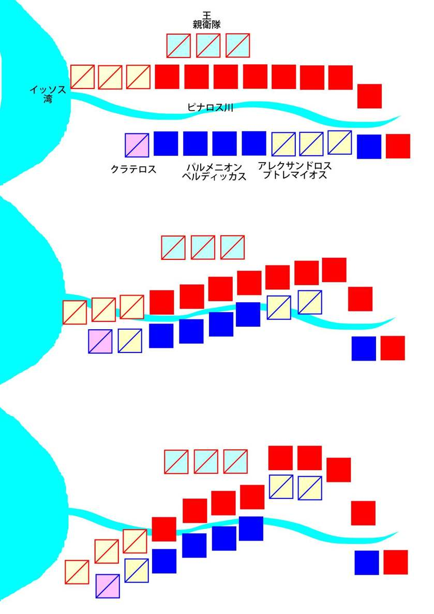
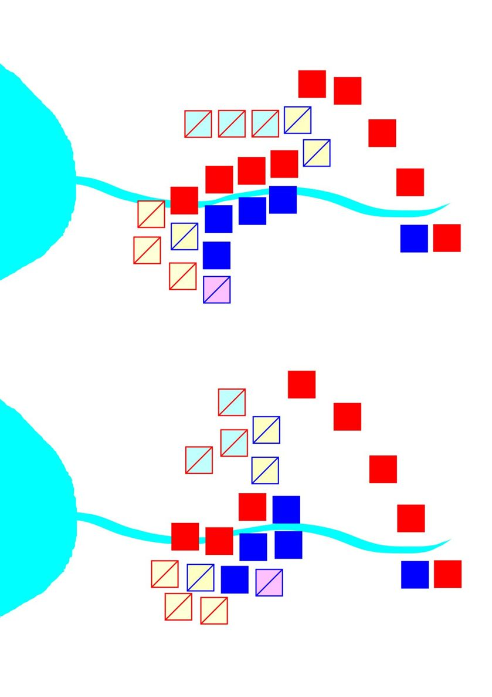
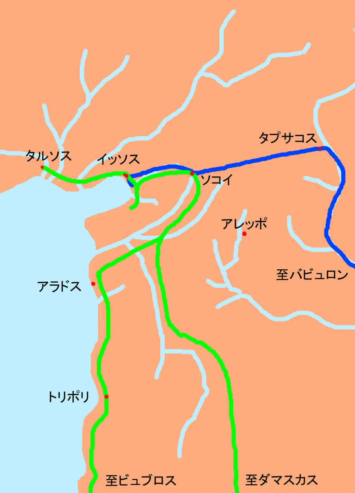
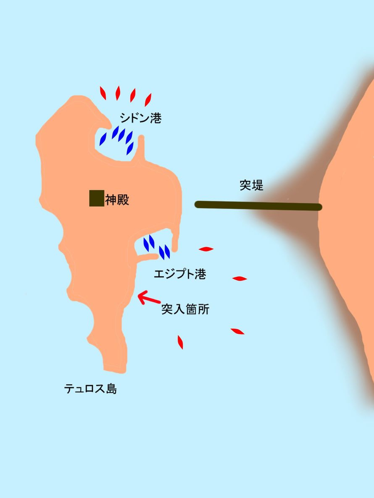
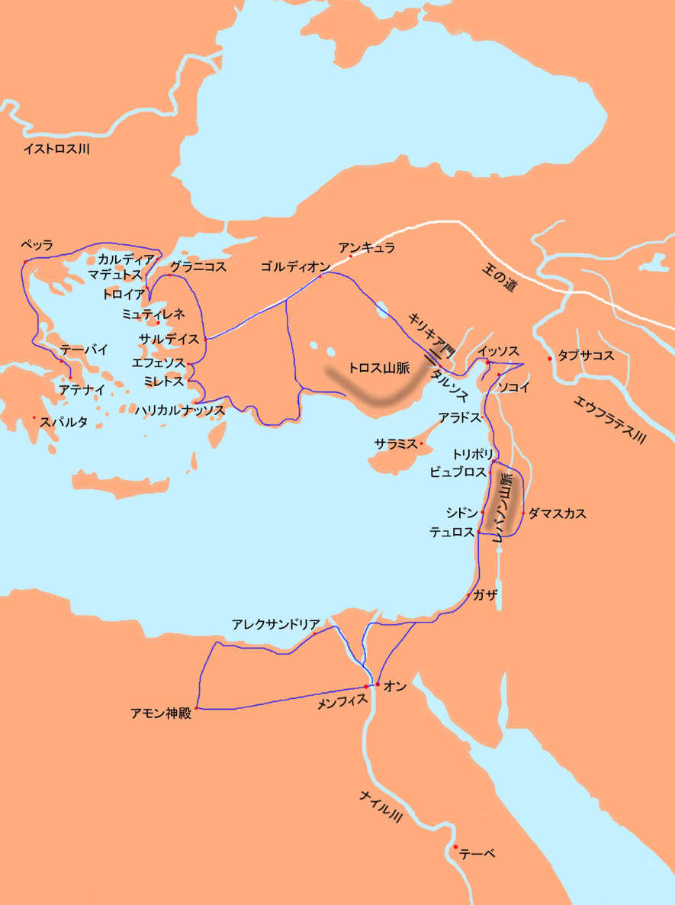

| エウメネス３ ― イッソスの戦い ― | |
| 田中 久三 | |
| Fuchishoshudo (2016) | |
エウメネス３ ― イッソスの戦い ―
田中久三
目次
東征二年目の夏が過ぎ、秋が訪れる頃、私たちはキリキアの海に出た。
南へ開けた地中海から深く入り込んだ入江は静かで、水底まで透き通った幾筋もの河川が流れ込んでいる。白い砂州には棗椰子の並木がどこまでも続いている。遠くリビュアの砂漠で暖められ、海で湿り気を帯びた風が吹いてくる。
振り返れば山の手は一面の小麦畑。まっすぐに鋤き込まれた畝に、秋蒔きの苗が萌え、早くも雪化粧した背後のアナトリアの山麓に緩やかに続いている。ここは箱庭のように美しく、沃穣で、裕福なところだ。この古来から世界の民が交差し争奪する土地の風景が、かくも平穏に見えるのはなぜだろう。いかなる民族もこの楽園のような土地に、長くは留まっていられない。北の寒冷な森林や、南の暑熱の砂漠から、後から後から蛮族がわいてきて、つかの間の和平を脅かす。そう、我らマケドニア軍のように。我らはアジアの西、ヨーロッパから出立し、うねうねと北へ南へと蛇行しながら、パフラゴニア、カッパドキアなどの諸州を接収しつつ、アナトリア内陸部を踏破し、キリキア門を南へ抜けて、ついにここに来到ったのだった。
「我らマケドニア人はここでは新参者だ。キリキア人はなべて、ヨーロッパ人を蛮族と恐れている。町を落とせば、男の市民は死刑にし、女は奴隷にするとな。」
嘘ではない。それがギリシャ人のならいだ。
「キリキアはかつてヒッタイトに支配され、次にアッシリア、そのあとペルシャに支配された。アナトリアを濫觴の地とするヒッタイトがシリアをも支配する大帝国に膨張したのはおよそ千年も前の話。ヒッタイトが滅び、アララト山麓からアッシリアが勢力を伸長したのはおよそ五百年前。そしてアッシリアを滅ぼしキリキアに太守を置いたのが、遥か東のペルシャ高原に興ったコウロシュ大王。
以来二百年間、キリキアはペルシャの支配に服している。ペルシャは、アジアの人民を支配することに長けている。そしてアジア人は、征服者に支配されることになれている。
俺はここで、ギリシャ人として初めて、ペルシャ人よりも寛大な支配者であることを実証して見せねばならない。だから、決して手荒なまねはするな。」
王はきつく全軍に戒め、一方で富裕な市民からは、莫大な戦費を徴発した。
王は風邪をこじらせたらしく、当分の間ご静養が必要であるという。我々はすでに二ヶ月にわたってここキリキアの首府タルソスに逗留している。当初の予定より一年遅れたが、我々はここキリキアで越冬し、来年シリアへ入る。
私がある日、自らのつれづれを慰めようと、キリキアの王宮をあちこち見物して回っていると、海に面したテラスに一人、王が棗椰子の木陰に長椅子を据えて寝そべっていた。近くのテーブルにはかじりかけのイチジクやスモモが置かれている。
王はキリキアの潮風に吹かれて、なにやら楽しげに眠っている。
私は邪魔をしてはならぬと思い、その場を立ち去ろうとした。
そうすると王は目を開き、手招きして、私にそこの涼しげな噴水の縁に座れという。
「お体の具合はいかがですか。」
「何ともない。」
「真夏でさえ冠雪をみるトロスの高峰から流れ落ち、タルソス市内を貫流するキュドノス川で水浴びして、余りの水の冷たさに引きつけをおこし、高熱を出した、と聞いておりますが。」
王は、ぷっと吹き出した。
「ずいぶんと間抜けな噂が広がっているのだな。夏の終わりに、キュドノス渓谷の滝壺の水があまりに澄んできれいだったから、飛び込んで一泳ぎした。俺だけではない。大人でも子供でも、誰もがつい滝の上から飛び込んでみずにはおれない場所だ。確かにとても冷たい山水で、爽快だったが、鼻風邪を引いてしまった。だが、その程度でいちいち寝込んだりはしない。」
「ダーラヤヴァーシュが医師を買収して、薬と称して王に毒薬を飲ませようとした、とも聞きました。どのような薬でしたか。」
「何も飲みやしないよ、ただの仮病だ。」
「なぜ仮病を使うのです。」
「なぜって、おまえだってこの沃穣なる山紫水明処、キリキアの晩秋を堪能したいだろう。このままのんびりと今年はここで越冬しようではないか。」
「はあ。さようですか。」
「去年と今年は事情が違う。」
「どんなふうに。」
「去年俺たちは、ろくな畑も、放牧地もないハリカルナッソスで冬を越さねばならなかった。兵に食わせる食料が確保できぬ。仕方なくパルメニオンに兵の三分の一を付けてサルデイスに駐留させ、また三分の一をギリシャに戻した。それでも食い物は足りなかった。メムノンが何でも焼いていってしまったせいで、軍は一種の飢餓状態に陥った。馬匹が死んだことにして勝手に食ってしまうやつもいた。そういう連中をむやみに罰するわけにもいかぬ。そもそも兵に食料を与えられぬ俺が悪い。蛸が自分の足を食っているみたいなものだった。こんなことを何年も続けられないのは明らかだ。」
なるほど。私が去年アテナイに戻れたのも、そもそも糧食が不足していたせいだったのか。
「ところがここキリキアは違う。アナトリアの中では、嘘みたいにたくさん小麦が獲れる。牛も羊もうじゃうじゃいる。俺たちが脛にかじりついたくらいじゃびくともしない。だからここで兵士らに食えるだけの飯を食わせて鋭気を養わせる。それもまた戦略だよ。
だが、ただだらだらと駐留しているとキリキアの農園主らがいやがる。穀潰しめ、早く出て行きやがれと思っている。兵らもだんだんに退屈してくる。血の気の多い連中、クレイトスやペルディッカスらがうずうずし始める。
そこでバカな王が水浴びで風邪引いて寝込んだとなりゃ、しばらく逗留する理由がつく。」
「だからわざと仮病を使っているんですか？」
「そうだ。そういや、おまえは医者の卵で、薬の調合ができると言ってたな。何か飲ませてみよ。」
「特に病気でもないのに？」
「風邪ならどうする。」
「そうしましたら、そうですねぇ、生姜汁に、桂皮、麻黄、甘草の粉末を加え、暖かくして召し上がるとよろしいかと思います。」
「ふうん。効き目があるんだかどうか知らないが、なんだかうまそうじゃないか。病気なのに医者にもかからず薬も飲まないんじゃみんなに怪しまれてしまう。今度仮病を使うときはよろしくたのむよ、エウメネス。」
何か用事でもあって呼び止められたのかと思ったのだが、王はそれ以上何も話そうとしない。
「さきほどは何か楽しそうな夢を見ておいででしたね。滝壺で泳いでた夢ですか。」
「寝てはいない。ややまどろんでいただけだ。俺はクセノフォンのことを考えていた。」
「クセノフォンの？」
「ああ、バビュロン郊外クナクサで、コウロシュ王子とアルタクシャサ王の戦があり、クセノフォンはその顛末を、まるでジオラマを並べて見せるほどありありと、精密に描写している。大した作家だよ彼は。俺はいつも頭の中で、その戦闘を再現してみるのだ。
朝、鶏が鳴き、市場が賑わい始めるころ、ペルシャ王軍が攻めてくるという知らせを受け、王子の軍は急ぎ隊列を整える。
昼過ぎ、地平線に白雲のように砂煙が立つのがみえる。
やがて何か黒いものが平原の上に広がっていくのがわかった。
さらに近づくと、金属がキラキラと閃くのがみえる。それは敵の長槍の穂先だった。
どうだ、わくわくしてくるだろう。
それから敵の隊列が見え始める。
向かって右手、敵の左翼には、白い胸当てを着けた騎兵隊。ペルシャ王族のチッサファルナが率いる軍であるという。
その左には足まで達する木製の大盾を携えた重装歩兵。彼らはエジプト人であるという。
さらに別の騎兵隊。
その隣には弓兵隊。
それぞれが民族ごとに矩形の密集隊形を組んでいる。
それら部隊の前面には、かなりの間隔をおいて、戦車隊が横並びに進んでくる。車軸から左右に幾本もの鎌が延び、また車体の下にも鎌が取り付けられた、いわゆる鎌戦車だ。これに轢かれると、全身をずたずたに切り裂かれて即死だ。
コウロシュ王子は、敵の喊声にたじろぎさえしなければペルシャ王軍など恐れることはない、とかつて言っていた。しかし今、かの敵は、喊声を上げるどころか、極めて静粛に、落ち着いて歩調も乱さず、ゆっくりと進んでくる。
王子は全軍に指示した。ペルシャ王は必ず、中軍の密集歩兵の中にいる。左右に伝令し、自らの守りを固めるために、必ずだ。だからそこを破ればすべては終わる、と。
敵軍と我が軍の間隔が三、四スタディアになったとき、両軍は鬨の声を上げて駆けだした。そして、互いに矢が届き始める前に、王軍は押され始めた。
敵が潰走しはじめると、もはや王子の軍も隊形を整えながら進む余裕もなく、敵を追撃するのに気をとられてちりぢりになってしまった。コウロシュ王子は単騎、王を取り巻く密集陣に飛び込み、王に傷を負わせたという。しかし突出しすぎた王子は手槍に目の下を撃たれて絶命した。
どうかね？」
「どう、とは。」
「我らとペルシャ王との戦いもまさにこのようになろう。ペルシャ王は必ず敵の中軍にいる。中央突破だ。王さえ衝けば、すべては終わるのだよ。
俺が敗れるとすれば、コウロシュ王子のように、味方から突出しすぎて自滅するのだ。」
王はこうして、渚の波の音を聞きながら、テラスで午睡しているようにみえる間も、来たるべき戦に備えて、常にその戦況をイメージして、策を巡らしておられる。
「おまえもイチジクを食え。いくらでもあるから遠慮するな。」
「王はたいそうイチジクがお好きですね。」
「ああ。アリストファネス曰く、「イチジクにまさるうまいものなし、」だよ。生で良し、焼いて良し。干しても良し。」
「ではありがたくご相伴に与ります。」
実を言えば私は皆がうまいうまいと言って食べるこの無花果という果物が苦手だ。子供の頃青い実を食べて腹を壊した。この実はしかしどれも、よく熟れているようだが。
そしてイチジクは、不思議な果実だ。中空で、甘いねっとりとした、細かな種が混じる紫色の果肉が、皮の裏側にびっしりついている。私はいつも、どうやって食べてよいのか迷ってしまう。
王はどうやって食べているのだろうと、見てみると、皮ごとかぶりついている。私もおそるおそるかじってみる。
「俺はここキリキアで、ギリシャ人としては初めて、アジアの王としての素質を試されることになるわけだ。」
「はあ、そうですね、」王は私を話し相手に、何か独り言を言いたいようだ。王は普段寡黙だが、時折こうして冗舌になる。私は当たり障りのない相づちをうつに限る。
「アルサメスは、ペルシャの王族で、ペルシャ王の家臣であると同時に、キリキアの太守であった。
キリキア太守はペルシャ王に毎年、三百六十頭の馬と、五百タランタの貢納金を支払う義務がある。また戦時には兵力もしくは相当の戦費を提供せねばならぬ。だが、彼の義務はたったそれだけのことだ。あのアルタバゾスもそうであった。
ペルシャの王族でない太守は、その土地の王族の子孫だ。キュプロスやフェニキアではまだ多くの王が治めている。我が兄アリダイオスに娘を娶らせようとした元ハリカルナッソス王ピクソダロス。かのハリカルナッソスも、ペルシャ王からほぼ完全な自治を認められている。ほぼ完全な！王の称号を名乗る名誉も含めて。ペルシャの属国という立場ではあるが。
ペルシャ王は王の中の王なのだ。諸国の王を統べる大王だ。そのペルシャの支配がいかに寛大なことか。ペルシャの支配のなんと巧妙なことか。
ピクソダロスは姉アダを追って、自らハリカルナッソス王となった。アダは女王であった。女でペルシャ太守というのは、俺はアダの他に聞いたことがない。ピクソダロスが死んだので俺はアダを女王に戻してやった。代わりに、あのばあさんは俺を養子にしようと言いやがった。つまり俺はハリカルナッソス王子となったわけだ。光栄ではないか。
ペルシャがこれまで、王や女王に自治を認めさせた土地では、俺もすべて王家の社稷を尊重し、それまでどおりに領国を支配させてやる。
ギリシャ人は人民を支配するすべを今まで知らなかった。支配するかされるか。奴隷にするか、奴隷になるか。だからアジアの支配者になれなかった。いや、知ってはいた。クセノフォンも。クセノフォンの本を読んだギリシャ人も。でも、それを君主として実行できる男がなぜか一人も出なかった。不思議な話ではないか？」
「確かに。」
「なぜギリシャ人はこれまでアジア人の王になれなかったのだろうか？たまたまか？」
「私にはわかりません。」
「おまえこれがなんだかわかるか。」
王は自分の頭を指さす。何のことだかわからない。
「これだよこれ。これがギリシャ人の桎梏だ。」
王は頭にかぶっていた月桂樹の冠を無造作にむしりとり、投げ捨てた。月桂冠はくるくると回りながらキリキアの海に落ち、波間に沈んだ。
「何をなさいます、王よ！」
月桂樹はアポローンの霊木と崇められており、月桂樹の枝で編まれた冠は「勝者」の冠を意味した。故にギリシャでは、王は必ず月桂冠をかぶることになっていたのである。
「代わりにこれからは、これをかぶる。」
王はアルサメスが王宮に残していった金の冠を頭に載せた。
「見よ、ポセイドン神は我が月桂冠を嘉納したぞ。」
海はサハラから吹く南風を送り、おだやかにたゆたっている。
「そして俺はアジアの王になる。アジアの王には金の冠がふさわしい。いやいや、あえて金の冠をかぶってみせなくては、ギリシャの連中には結局、俺が何をしようとしているのか、わかるまいよ。」
言葉もなく王を凝視している私に王はさらに言った。
「皆、俺をアジアの王として遇するのだ。俺はペルシャ王と対等、もしくはそれ以上の存在となる。
師はこの俺のありさまを見て、きっと俺を破門するだろうな。」
王は不敵に笑っている。
私はふと最近気になっていたことを尋ねてみた。
「ところで近頃、ハルパロスの姿を見ないようですが。たしかゴルディオン辺りまでは我らと一緒にいたような気がするのですが。彼に帰国をお許しになったのですか。」
「あいつは脱走したことになってる。」
「脱走？」
「そうだ。金庫番のハルパロスが金を着服して逃げたことになっている。」
穏やかでない。陣中から金を持って逃走したとなれば敵前逃亡で死刑は免れない。
「どうするんです。捕まえるんですか。」
「もうじきあいつは帰ってくるだろう、と俺は思う。何でも俺に喋らせるな。あいつが帰ってきたらおまえが自分で聞け、エウメネス。」
王はめんどくさそうに口をつぐんだ。
実際、我々がタルソスに滞在している間に、ハルパロスはひょっこり戻ってきた。
「ハルパロス、あなた、金を持ち逃げしたんですって？」
「いや、しばらくアレクサンドロスにお暇をいただいてたんだ。」
「ほんとかい。王は「脱走」だって。」
「そういうことになっているんだ、アレクサンドロスとの申し合わせで。僕にとっちゃはなはだ迷惑だがね。いろいろ複雑な事情があるんだ。こないだゴルディオンにエピロスからタウリスコスというやつが使いで来ていただろう。」
「ああ、確かに。」
「それで僕はアレクサンドロスに聞いた。いかがいたしますかと。そうしたら、俺はそんな今はイタリアのことまで頭が回らぬ。おまえが必要だと思うなら、今金庫にあるだけの金を持っていけと。金庫を開けてみたが大した金は入っちゃなかったんだ。ハリカルナッソスまで、お宝はみんなギリシャ傭兵が持ち逃げしちゃったんだからな。それでまあ、マケドニアとエピロスの同盟は最高レベルに重要だ、しかし肝心の、エピロス王女にしてアレクサンドロスの母オリュンピアスは、マケドニア王家からもエピロス王家からも煙たがられて、宙に浮いちゃってる。エピロス王の軍才がどれほどのものか、まああまり期待はできないが、今後の付き合いのことを考えて、なにがしかの金を渡したほうが良いと僕は思った。
こないだ話した通り、アレクサンドロスがエピロス王を援助すると、王の母オリュンピアスとの間に角が立つ。だから僕が金を持ち逃げして、アテナイの娼婦にばらまいて使っちまうってことにしたんだよ。」
「ひどい話ですね。」
「僕とタウリスコスは王の金庫を馬車に載せて密かにゴルディオンを脱出し、サルデイスを過ぎて、エフェソスに待たせてあった船に乗り、ピレウスで降りた。タウリスコスは、波止場の傭兵酒場でくだ巻いてた貧乏人どもに銀貨をばらまいて、彼らを連れてエピロス王が駐留しているイタリアのタラスに渡ったのさ。」
「そんな連中、戦場で役に立つんですか。」
「立つも立たないも、ただの義理、頭数だからな。傭兵なんてのはそんなもんだ。」
「それで、あなたはどうしたんです。」
「僕はイタリアとやらを見てみたい気もしたが、淫売宿で放蕩したって証拠を残さにゃならんから、仕方なく、メガラ街道あたりの宿場町を行ったり来たりしてた。」
メガラ街道というのは要するに、アッティカのテーバイ、アテナイ、プラタイアイなどのポリスから、アテナイの外港ピレウスを過ぎ、コリントス地峡沿いにメガラ、コリントス、そしてスパルタへと到る街道であり、同時に神殿やら、歴戦の武将らを葬った墳墓やらがやたらと街道沿いに建っている。そういう史跡をたどる巡礼の道でもあり、飯盛女や花魁やらが旅人を手ぐすねひいて待ち受けている魔境でもある。
ペロポンネソス半島とギリシャ本土をつなぐ、コリントス地峡は、ギリシャの要衝で、ポリスや港がひしめき合っている、ギリシャでも一番栄えて人口も多いところだ。私はそういう「悪所」にはできるだけ近づかぬようにしている。
「金はまあいくらでもあるわけだ。女どもを集めて、できるだけ派手に、盥いっぱいの、旬のアッティカシャコを塩茹でにしてもらって、みんなで木槌で叩いて、ばりばりと殻を剥いて、エジプトの岩塩をふりかけて、クレタのバージンオリーブオイルを垂らして食ったりした。
雉、鳩、雀、鶉、鶫、鴨、そうした野鳥や、兎なんかの獣を丸焼きにしたのをずらりと街道筋の店先に並べて食べたりもした。とにかくありとあらゆる贅沢をして見せびらかした。」
「うらやましい仕事ですね。」
「君もそのうちやってみると良い。ギリシャ中の貧乏人から嫉まれるぞ。嫉みのオーラっていうのはな、精神的に来るんだ、ものすごいんだぞ。そのうち、嫉妬に狂った男たちに闇討ちに遭うかもしれんから、気を付けているんだ。
そうしているうちに僕のなじみの女友達がだんだんに集まってきて、僕に言うのさ。みんな僕とは離れたくない、もうエピロスやマケドニアやアナトリアなんか行く必要はないって引き留められてね。彼女らはマドュトスまで僕を見送りに来てくれた。だいたい僕は、一年きりの約束で、アレクサンドロスの頼みを聞いてやったのさ。あんまりアテナイを離れると、僕はともかく、女たちがかわいそうでね。」
この話、どこまでまじめに聞けば良いのだろう。
「そうして毎日ぶらぶら遊んでたら、娼婦の組合長から呼び出しがかかって、何のお叱りかと思って、もしかして僕の遊興が目に余ると怒られるのかと思ったら、アレクサンドロスに要望があるから、その使者になってもらいたいって、頼み事があるというのさ。」
「ハルパロス、あなたが？娼婦の組合長から王への使者に？娼婦にも組合があるんですね。で、どんな要望ですか。」
「ああ。アレクサンドロスがテーバイを滅ぼしたせいで彼女らは怒っていてね。お得意さんがたくさん逃げちまって娼館も廃業したって。それで調べてみたらテーバイ市民の財産は全部併せても四百四十タランタしか残ってなかったらしい。何ともしみったれた話だよな、そこで娼婦の組合が募金活動をして、テーバイの城壁を再建しようって話になったらしいよ。」
「それでテーバイは復活することになった？」
「ところがね、君、あのディオゲネスを知ってるかね。」
「犬儒派の？まあ、名前くらいなら。」
「そのディオゲネスを情夫にしているフリュネというとびきり売れっ子の娼婦がテーバイにいるのだ。」
「なぜあの汚くて臭くてみすぼらしくて貧乏なディオゲネスがテーバイでとびきり売れっ子の娼婦にもてるんです？」
「さあ？意気投合したんじゃないか。ただ一つ言えることは、ディオゲネスには娼婦を買うような金はないってことくらいさ。だから二人がヤってるってことはフリュネがディオゲネスを気に入ってただでやらせているってことだ。」
「ヘタイロスとヘタイラどうしってことだね。」
「そう、あんな汚い男に抱かれた女にさえ貢ぎたいって男はいくらでもいるってことだろ。」
「きっとフリュネも犬儒派なんでしょう。」
「そうかもしれん。娼婦なんてものは存在自体が野良犬なのかもしれんな。で、その組合長のフリュネが言うんだ。さっきも言ったように彼女はテーバイで一番の売れっ子で羽振りも良いんだが、フリュネは率先してその城壁の再建に金を出すし、ディオゲネスや彼の仲間たちも募金活動に協力する代わりに、その壁には「アレクサンドロスによりて破壊されし壁、淫売婦と犬によりて修復されたり」と銘文を刻もうって言ってるのさ。傑作だろう？ところがテーバイ市民が嫌がってね。」
「そりゃそうでしょう。」
「僕としてもこの話にゃ断然乗り気になった。実際彼女らが困っているのはテーバイを破壊したアレクサンドロスの責任さ。そこでその募金の話をマケドニア軍中でもし、またアレクサンドロスじきじきに勅許を得て、あわよくば彼にも金を拠出してもらおうと思って。それに酒場巡りにもいい加減飽きたんで、戻ってきた。」
「ハルパロス、あなた、ほんとにそれを王に言ったのですか。」
「言ったとも。」
「彼はなんて言いました？」
「大いにけっこう。俺も一口乗ろうと。」
さすがに王は太っ腹だ。それくらいのことで怒ったりはしない。
しかしテーバイ人はますます怒るだろうな。アレクサンドロスとフリュネとディオゲネスが連名で銘文を刻んだ壁なんて。
「わかってくれるかな、僕の立場を。アレクサンドロスほど金の使い方が下手で、そして僕ほど金の使い方がうまいやつもいない。彼は僕を必要としている。彼は自分じゃお金の使い道がないんだ。僕がお金を使うことは彼のためにもなるんだ。だから彼は僕にお金を預けてるんだよ。僕が彼の代わりにお金を使ってあげて、本を買ってあげたり、読んであげたりしているのさ。」
年も押し詰まった十一月、バビュロンのペルシャ王宮を進発した親征軍がアナトリアに向かっているとの情報が届く。
アッシリアに派遣した斥候は見てきたままを報告した。
ペルシャ王軍はエウフラテスを軍船でさかのぼり、タプサコスの渡し場で下船し、そこからまっすぐ西へと行進した。
軍団の先頭には、赤地に金の、鷲の刺繍入りのペルシャ軍旗が掲げられている。ダーラヤヴァーシュ三世自らが元帥として臨んでいる証しである。
続くは鱗綴りの鉄の帷子を纏った黒マスクのメディア兵。
そして黄銅の竜飾り付きの兜をかぶったアッシリア兵。
とんがり帽子のスキュタイ兵。
馬の頭皮を被った東エチオピア兵に、豹の毛皮を着た西エチオピア兵。
或いは縞模様のターバンをかぶってラクダに乗ったアラブ軽装兵。
そして長槍を持ち、編み上げサンダルを履いたギリシャ人の傭兵たち。
「実に喜ばしいことだ。忙しくなってきたぞ。」
王は例によって私とプトレマイオスを呼んで三人だけで軍議を開いた。
「今年はもう来ないんじゃないかと思ってたよ。年内に一戦交えることになる。わざわざシリアまで来て、アルサメスをいじめたかいがあった。」
王はもみ手をしながら本心で喜んでいるようだ。実際タルソス市民らはともかくとして、アルサメスやペルシャの王族は怒り狂っているだろう、こんな風光明媚な土地を奪われて。
私は内心恐ろしくて仕方なかった。プトレマイオスを見ると彼もおびえているようだった。彼は言った。
「ペルシャ軍はアッシリア平原の町ソコイに入りました。ペルシャ王の王女ら、親族もソコイにいるようです。
イッソス湾にも敵艦隊の影がうようよ見えます。」
我が軍はいよいよタルソスを発してキリキア最南端のイッソスという小さな漁村に入った。この港が面する、キリキアの海が内陸へ最も入り込んだこの湾をイッソス湾というのだ。ここはおよそ、アナトリアと、シリア、アッシリア、そしてフェニキアの境に位置している。まさに緩衝地帯。手出しをしてはならない場所。世界史的大戦が勃発するのにふさわしいところだ。
ソコイはイッソスから東へ、山を越えた内陸のただ中にある町である。
「我らがソコイへ進めば、何も妨げるもののないアッシリア平原の中に全軍をさらすことになります。我らはペルシャ軍が到着するより前に、一旦アナトリア山中まで退却すべきです。我らにはまだ平原でペルシャ軍と会戦する実力はありません。またアナトリアやフェニキアの制海権もいまだキュプロスのペルシャ艦隊が握っています。」
要するにプトレマイオスは、海も平原もペルシャにとって有利であり、我らはアナトリア内陸の山間部にいるのが一番安全だというのである。また本国マケドニアに陸路で帰るに便利だと。彼の発言を王は一通り聞いてから口を開いた。
「また負けたときのことを心配しているのか？」
虚勢を張っているかのように、王は陽気だ。
「キリキアを手放してはならぬ。キリキアは我らが生命線だ。キリキアの奥地、アナトリアの山間部では、兵を食わせることができず、我らは戦わずして負ける。」
アナトリア一の穀倉地帯キリキアを死守する。退却はならぬ、ということだ。王は続ける。
「ペルシャ軍と我が軍の違いはなんだ？彼の弱点とは？彼らはどういう状況で戦えば有利で、どういう場合に不利か。一方、我らはどういう状況が最も有利になるか？おまえらに本当にわかっているのか？」
王の問いは、私たちに対する問いかけというよりは、自説を述べる前置きに過ぎない。私たちはただ口を閉ざして王の言葉を待った。
「おまえは、ペルシャ全土からペルシャ王の命令でペルシャの王都バビュロンに帝国軍が参集し、それがペルシャ王に率いられて今アナトリアまで来ていると思うのか。」
王は私の方を見てそう聞いた。
「そうではないのですか。」
「違うよ。ペルシャは広い。いちいちあっちこっちから軍を集めたりはしない。あっちで反乱が起きたからこっちの兵を連れて行くというのでは、こっちで反乱が起きたときに対処できぬ。アラブにはアラブの、エジプトにはエジプトの、そしてアナトリアにはアナトリアの太守がいて、太守が現地で傭兵を雇って戦うのだ。諸国から選抜した精鋭部隊はせいぜい一万人。全体で十万くらいの軍勢で、その大半は安い金につられて雇われた傭兵、烏合の衆よ。我らのように、十人が十人、百人が百人、ギリシャやトラキアで同じかまどの飯を食った、強い絆で結ばれた友軍でできているのではない。
今我々は、ギリシャのテーバイを討ち、そしてアナトリアを蹂躙したわけだ。今我らを憎み報復を願っているのはギリシャの中のペルシャ派。というよりギリシャ人はアテナイ人であろうとテーバイ人であろうとスパルタ人であろうと俺の敵だ。俺がペルシャ王に勝つなんてこれぽっちも考えてない。俺がペルシャに負けたら一番乗りでマケドニアを叩こうと考えてる連中ばかりだよ。それがコリントス同盟の本質だ。
それからアナトリアにいたペルシャの将軍や高官たち。俺たちがグラニコスでひっぱたいた連中。あいつらも俺を恨んでいる。やつらは俺たちが負ければアナトリアを取り返し、ギリシャ全土をペルシャのギリシャ太守として治めることができる、ともくろんでいる。だからどうしても勝ちたい。怒りと欲望に目がくらんでいる。
しかしやつらは俺たちが強いってこともよっくわかってる。トラキア人やテーバイ人に、噂には聞いていたが、信じられなかった連中も、グラニコスで負けて身に沁みてわかったはず。やつらとて二度も続けて負けたくない。」
「だから、バビュロンからペルシャ王が来る必要があるわけですね。」
「その通りだ、エウメネスよ。弱くて自信がなくてそれゆえに徒党を組む連中ほど、絶対的な権威というものが欲しいのだ。
ペルシャ王は、本当はギリシャやアナトリアのことは現地でうまく裁いてくれりゃいいのにと思ってる。帝国全土にちらばった五万といる遠い親戚のことなどいちいちかまっておれぬ。ペルシャ全体からすればアナトリアは、腕を蚊に食われたか、せいぜい脛をヒルに吸われたくらいのものだ。しかしキリキア、シリアとなると話は違ってくる。どてっ腹に食いつかれたようなもんさ。
あいつは、ダーラヤヴァーシュは、本家が途絶えたので急に担ぎ出されたのさ。バビュロンで王位についたのが七年前。戦らしい戦はやったことはない。つまり王としても、元帥としても完全に無能。バビュロンに来たのも呼ばれたから来ただけ。イッソスに来たのも呼ばれたから来ただけ。
太守らが、特にアルサメスがバビュロンの王宮まで押しかけてきて、大騒ぎする。早くあんなやつやっつけてください、と。ほっといちゃペルシャ帝国の沽券に関わる。広大な版図のあちこちでアレクサンドロスみたいなやつの離反が続出するかもしれない。
王の身内にも戦死者が出ましたよね。そのうえ、これこれこういう具合に完璧なお膳立てをしましたので、是非お越しください。そう言われてダーラヤヴァーシュは重い腰をあげた。なんだかよくわからんままに、パレードを組んでシリアまで出陣する。
そうするとペルシャ軍とは何かといえば要するにテーバイの敗残兵をかき集めたのと、アナトリアの烏合の衆の集まりの真ん中に、ペルシャ王という飾りを乗っけて、後ろからキリキア貴族らが焚き付けているだけのものだ、ということがわかろう。どうだ、勝てそうな気がしてきただろう。」
そうかもしれぬ、と私は思ったが、プトレマイオスはまだ半信半疑のようだ。
「というかこれで勝てぬようでは、グラニコス川の鯉の餌にでもなっていたほうがましだ。では我々はどう攻めるかね？」
「そうですね。周りの烏合の衆をできるだけ相手にせず、真ん中のペルシャ王に全力を集中しましょう。」
「その通り。ご明察、エウメネス君。いちいちギリシャの傭兵や、アナトリアの雑魚どもを相手にする必要はない。そういうやつらはパルメニオンにでも任しておけば良い。」
私は苦笑した。なるほど、軍議にパルメニオンを呼べぬわけである。
「パルメニオン、あとその腰巾着のクラテロス。あいつらにも使い道はある。わーっと一生懸命戦っててくれればそれで良い。特に戦果は期待しておらぬ。パルメニオンには、先王以来の忠実な老将軍という役を演じてもらう。クラテロスは、パルメニオンというおいぼれが死んだ後に自分がその後釜として副将軍となるのをただ待っている、ちんけなやつだ。言わば捨て駒だが、テッサリア兵を率いて、死なぬ程度に頑張ってくれればそれで良い。」
王は飽くまで非情だ。
プトレマイオスがやっと口を開いた。
「それで、我々から攻めますか。それとも待ちますか。」
王はイッソスの地図をまじまじとながめ、言った。「我々にはやはり平原は不利だ。海と山に挟まれたこの狭い峡谷地帯を、フェニキアのトリポリまで南下する。トリポリ港に敵艦隊が停泊しているとの知らせが入っているからだ。
ペルシャ王も、我らをただ見逃して、フェニキアのビュブロスやシドンまでは行かせてはくれまい。どこかで割り込んで来る。」
「わざわざこんな不利な山峡に入ってきますかね。」私もあり得ないと思った。大軍は平原でこそ、その戦力を最大限に活かせる。狭いところでは戦力の一部しか一度に動員できないのだ。
「来るとも。私でもそうする。私なら、キリキアへの退路を断ち、トリポリへの進路を塞いで、艦隊で海を固めて、我らを挟み撃ちにしようとするだろう。だから交戦場所はこの、イッソスとトリポリの中間付近、キュプロス島の東辺りになろう。」
そう言って王は地図の上の海岸沿いの一点を指さし、話を続けた。
「キリキア太守アルサメスは俺がわざとタルソスでアジア王をきどって、のんべんだらりと逗留したせいで怒り心頭のはず。やつは今頃ペルシャ王をやいやいせっついているはずだ。持久戦に持ち込もうなんて腹はあるまい。ペルシャの大軍でひねり潰せばそれで片が付くと思っている。
それにペルシャ王は母親に妃、それと子供たちをソコイまで連れて来ているという。これまた短期決戦を望んでいるということだ。」
「なぜです？」
「女というものは、特に王族の女というものは、こういう不便な天幕暮らしをいやがるものだ。早く決着を付けてバビュロンに帰りたがっているだろう。どうせ物見遊山気分だ。」
なるほど、王というものは、目のつけどころが違う。
「アナトリアの太守たちも功を焦っている。もうかれこれ一年以上、我々に翻弄されて、恥をかかされて、頭に血がのぼっている。その上、我らがこうして山間部に逼塞しておれば、ペルシャ王の大軍に恐れをなしているのだろうと、向こうは考えるはずだ。遅からず向こうから動き出す。」
「そううまくいきますかね？」
「うまくいかないと困るな。我々だって、いつまでも兵粮が保つわけじゃない。」
敵は前方のシリア側からではなく、背後のキリキア側からイッソス湾に入ってきた。
「なんともう仕掛けてきたか。前方に別働隊は？」
「哨戒が調べましたが、いないようです。」
我らはキリキア側のペルシャ軍に向き直って前進した。
「いいか、敵は馬鹿の一つ覚えで、セオリーどおりに軍を展開してくるはずだ。コウロシュ大王の時代から、かのペルシャの戦法は、まったく変わっていない。後生大事にペルシャの家訓となっている。逆の言い方をすれば、我らには彼らの出方があらかじめ読める。
シンメトリーな、バランスが取れた、幾何学的な陣形。そして圧倒的に多数の軍勢。その中心には親征の象徴である王がいる。これがペルシャ人にとっての必勝パターン。これまでこれで負けたことがない。少なくとも陸戦では。負けるのは、このパターンが崩れたときだけだ、と彼らは思っている。プラタイアイやグラニコスで負けたのはそれができなかったせいだと。戦力の逐次投入になって数のメリットを活かせなかった。部隊の連携が取れずばらばらに動いた。だから逆に、一斉に、一糸乱れぬ均整の取れた陣形で大軍を投入すれば勝てる。
確かにそうやって来られると我らは負ける。我らは逆に、ペルシャの戦法が今の我らにとってふさわしいものではないことを知っている。あの、カイロネイアで、そしてトラキアやイリュリアの森の中で俺は確信した。」
斥候によれば、ペルシャ軍はピナロス川を挟んで一列に海から山裾までを埋めて陣取り、川には逆茂木を立て、我が軍の到着を待っているという。我らとペルシャ軍は、ピナロス川を挟んで対峙することになる。それは奇妙なまでにグラニコス川の戦いと似た展開となった。
「ペルシャ軍には珍しい陣形だ。山側の敵左翼は山裾の中まで回り込むように重装歩兵を配置している。一方海側の右翼には騎兵を幾層にも配備している。中央は例によって重装歩兵。その後ろに王の親衛隊。なぜこんな陣形にしたのだ？」
「これは私の思いつきに過ぎませんが、」と私は前置きしてから説明を試みた。
「まず、川沿いに逆茂木を引いて待ち構えているということは、彼らは自分から仕掛けるつもりがなく、我らから先に攻めさせようというのでしょう。川筋で我らを食い止め、さんざんに矢を射かけて、できるだけこちらを疲れさせ、弱らせてから攻めるつもりです。
また、敵の軍勢はこの狭い戦場に入りきれないほどに多いのでしょう。山側に騎兵隊を配置しても機動性を活かせないので、重装歩兵をみっしりと詰め込んでいる。彼らはグラニコスに懲りて、我が右翼が山側から回り込むのを恐れているのでしょう。だから左翼は、我らより先にここへ陣取って、我らを塞ぐことを最優先に配置している。
一方海側の敵右翼は、比較的平らですし、海も遠浅ですから、騎兵の機動力を活かして我らの背後に回り込もうと考えているのでしょう。後から後から後詰めの騎兵を送り込むつもりです。そうして時間をかけて、右からも左からも、緊密な陣形を保ちつつ、じわじわと真綿で締め付けるように我らを包囲して、殲滅しようという作戦ではありませんか。」
「なるほど。戦場が狭いながらに多勢を活かす手のつもりか。」
王は羊皮紙に描かれた地図の上に敵の配置図を書き込みながら、思案を巡らした。
「エウメネスの言う通りならば、実に頭の悪い作戦だ。
『兵は拙速を聞くも、未だ巧みの久しきに賭けざる也、』だよ。下手でも良いから素速い動く。巧みにじっくり、ではない。速さこそが命だ。それが戦場の真実だ。むこうが十の時間をかけて圧勝を期するのであれば、我が方は九の時間で拙速に決着を付ける。それでも勝ちは勝ちだ。
亀のように厚い鎧をまとっていても、一箇所の亀裂から針を通して心臓を刺せば亀は死ぬ。却って甲羅の重さが敵の攻撃から逃げるのに邪魔になる。そうじゃないかね？
俺の作戦は、こうだ、プトレマイオスよ。俺とおまえ、そしてヘタイロイは山寄りの右翼。中軍はパルメニオン。おまけにペルディッカスも付けてやる。海寄りの左翼はテッサリア兵とクラテロスに任す。」
私は言った。
「あまりに左翼が弱すぎます。テッサリア兵はマケドニア兵ほど強くありませんし、またクラテロスは経験不足です。なぜ敵の精鋭にクラテロスを当たらせるのですか。やすやすと突破されてしまいます。
中軍のパルメニオンとペルディッカスも支えきれるかどうかわかりません。なにしろ敵の中軍は親衛隊を控えて非常に分厚いですから。」
「そこだよ、エウメネス。我が軍は右を強く左を弱く配置している。そうするとどうなるか。」
「我が軍は右は押しますが、左は押されます。」
「そうすると敵陣はねじれて対称性は崩れる。右翼が突破したとなれば中軍も左翼も右へ引き寄せられ、敵の左が手薄になる。我らはそこを突破する。敵親衛隊は我らに身をさらすことになる。我らがそこを一挙に衝けば、たやすく敵の王を捕らえることができる。」
わかった。これは、カイロネイアに、コウロシュ王子の作戦を加えてアレンジしたものだ。
「そんなにうまくいきますかね。」
「何度も言うな、言わせるな。うまくいくいかぬはどうでも良いことだ。うまくいかなきゃ死ぬだけだ。あちらと同じ戦法で戦えば我らが負ける。あちらの戦法に俺らが合わす必要は、全くない。隊列というものは戦闘が始まると必ず崩れていくものだ。その崩れた隊列こそが真の隊列なのだ。その常に変化する隊列をどう制御するか。どう自分に有利に活かすか。多勢に無勢な我らはむしろ積極的にかの均衡を崩し、一発逆転のチャンスを作る。そしてそのチャンスを活かし得る、機動性に勝る我らが勝つ。」
我が軍は隊列に隙間や粗密など、乱れが出来ぬよう、ゆっくりと横並びで進んだ。ただ一人王だけが、左翼と右翼を忙しく行ったり来たりした。自分の目で敵軍の配備を確認しつつ、左翼と右翼の歩兵と騎兵のバランスを調整し直している。
敵陣が間近に見えてなお、隊伍を保ったまま、右翼から左翼へ一個騎兵部隊を密かに移動させ、クラテロスに、敵が海に入って、回り込まないようにせよと注意を与えた。
王はパルメニオンに最後の注意を与えた。
「グラニコスに参加した太守の中でアルサメスだけが生き延びたのはなぜだと思う？パルメニオンよ。」
「さて、運が良かったのでしょうか。」
「違うよ。
アルサメスはアナトリアの中では一番遠く、キリキアから馳せ散じて、しかもペルシャ軍の総司令官に収まった。アナトリアの中ではキリキアが最も富裕で兵の動員数も多いから、現地フリュギアの太守アルシテスもアルサメスを立てた。キリキアから見ればフリュギアは僻地だからアルサメスは半ば義理で参戦した。そしておそらく司令官のくせに、いやであればこそ、最前線には立たず傍観しており、負けるとみたら、兵を温存させて引いた。それだけだ。しかし今度は尻に火がついている。総力で、死にものぐるいで向かってこよう。アルサメスも、先には負け、今は領地を奪われ、部下や領民の手前、死ぬか生きるかしかない。」
「左様でございましょうな。」
「パルメニオンよ、おまえには、中軍で王の旗印を掲げて頑張ってもらう。つまりおまえは俺の代わりに中軍に陣取り、采配を取ってもらう。俺がペルシャ王に一騎打ちを挑む間。」
「ペルシャ王と一騎打ちを？王自ら？」
「そうだ。そしておまえは言わば囮だ。そうするのが唯一、我が軍が勝てる作戦なのだ。忠実に遂行してもらいたい。良いか、アルサメス率いるキリキア軍はおそらく敵右翼、騎兵隊の先鋒にいて、雪辱を遂げるために、真っ先におまえめがけて突進してくるであろう。アルサメスを良く持ちこたえろ。それが今回のおまえの任務だ。」
互いに矢玉の射程に入ると、王は近衛騎兵らに親しく語りかけた。「我がヘタイロイよ。今こそ俺は君たちの力が必要だ。離れずついて来い。決して遅れるな。先にも言ったように、戦闘が始まった後の指揮はパルメニオンに任せてある。俺はただ敵中を突破して、ダーラヤヴァーシュと一騎打ちする。我がヘタイロイよ、おまえたちも他のことは考えなくてよい。おまえたちを待っていたのでは、俺はダーラヤヴァーシュを取り逃がしてしまう。おまえたちが俺に追いつかなければ、俺は一人敵中に飛び出して、殺されることになる。
我らが正面は分厚い重装歩兵だ。突破は困難だが不可能ではない。俺の左右に楔形の陣形を取れ。行くぞ。」そう言って王は、軽く馬の腹に拍車をかけると、右翼を飛び出し、川に躍り込んだ。近衛騎兵隊が後に続いた。
王と近衛騎兵はピナロス川を一気に渡って敵の左翼に当たった。できるだけ速く白兵戦に持ち込んで、敵重装歩兵が放つ矢の被害を最小限に留めるためである。
王が突入するのを見ると、マケドニア兵士らは、あらかじめ決められた通りに、戦いの歌を歌い、軍神を称える鬨の声を挙げ、盾と槍を打ち鳴らし、一人残らず突進した。
こうして歴史に名高いイッソスの戦いが始まった。
右翼が混戦に突入しているうちに、左翼のクラテロスは、早くも戦列を崩し始めた。敵が海側から大挙して回り込み、我が中軍のパルメニオンとペルディッカスの背後へ迫ろうとしている。
王に指揮を任されているパルメニオンは、王を見失った。混戦の中、王が今どこにいて何をしているか、さっぱりわからない。四面にペルシャ軍の旗幟を見て、パルメニオンは敗北を覚悟した。まもなく我が軍は、圧倒的多数のペルシャ軍に完全に包囲され、なぶり殺しにあうのだと。
しかしマケドニア軍の右翼では、それよりも速く、まったく正反対のことが起きていた。
王にはまたしても見えたのだという。有機体のように密集した敵の隊列も、よくよくみれば部隊ごとの方陣が配列したものに過ぎぬ。部隊は賽子を並べたように互いに寄り添い、常人にはその境界を見極めがたい。だが、王にははっきりと見えるのだ。いや感じるのだ。固く詰まっているところと、弛く張り合わされているだけなところとの境目が。王がその境目を突くと、続く近衛部隊が、遮二無二、その切れ目をこじ開けていく。王のヘタイロイは、言わば、煉瓦が積み上げられたその隙間を、自在に変形しながらすり抜けていく軟体動物のようなものであった。そうしてついに、ペルシャ左翼に間隙を作り突破した。
ペルシャ中軍、王の親衛隊の左側面が、無防備にも我がヘタイロイの前にさらされた。
ペルシャ王の親衛隊はゆったりと車間を取った三頭立ての戦車百台ほどからなる部隊であった。その周りに近衛騎兵と重装歩兵が厚くひしめいている。
戦車は二輪。馬は横並びに一本の軛につながれ、車体に固定された二本の轅で両端を挟まれている。乗員二名、戦士と馭者が並び立っている。ペルシャ王ダーラヤヴァーシュは、その中の一台に、仰々しいマントをはおり、鎧を身につけ、盾を背負い、片手に弓を執って、もう片手で手すりをつかんで乗っていた。すでに五十を過ぎていたダーラヤヴァーシュにとって、荒れ野を走る戦車は決して乗り心地の良いものではなかったし、軍装も肩にずっしりとこたえる。
「徐々に前進せよ。慌てるな。アレクサンドロスは何をやらかすかわからぬやつだ。敵に奇策を使う隙を与えるな。」
王は伝令した。先に敵の左翼が潰滅したらしいので、全軍をゆるやかに右へと伸ばしつつ、敵を包囲追跡する態勢に移りつつあった。彼が王位に就いたのは七年前。それまで王親らが出陣した戦は一つもなかった。王として指揮を執るのはこれが最初だった。
王は親衛隊に停止を伝えた。自らはピナロス川の岸に留まり、歩兵らには続々と川を越えさせる。すべてが事前の計画通りに進んでいる。
「敵は、思いの外、脆いな。案外早く、かたが付きそうだ、」ペルシャ王がそう安堵した頃合いだった。
にわかに左手奥に喧噪が起こった。
あの何層にも重ねた我が左翼の戦列に裂け目が生じている。信じられない。ペルシャ王には事態の深刻さがたちまちわかった。我が兵の群れを左右に押し分け、その先頭を切って自分に迫り来る男が、まさに、マケドニア王アレクサンドロスその人であるということも。
ペルシャ王の戦車は戦車隊の中央にあって、馬印や旗印もとりわけ目立つ。その王の戦車を目印に命知らずの敵が突き進んでくる。
やがて矢が雨のように降り始める。流れ矢に当たった兵士が辺りで一人、また一人と倒れていく。
あの男を先端とする騎兵のくさびが、何の抵抗もなく自分へと一直線に延びてきて、あの男が槍で我が胸を串刺しにして、我が戦車に飛び移り、剣で我が首を斬るであろう。そんな映像がダーラヤヴァーシュには見えた。
戦闘が始まってかくも短い時間の間に、なぜ彼がここまで自分に肉迫しているのか。なぜ圧倒的に優勢なはずの我が軍が、今このような危機的状況に陥っているのか。ダーラヤヴァーシュには理解できなかった。
おお、今こそ王は王たるべく、俺はあの男に、王者と王者の、サシの戦いを挑もうか。そんな想念が一瞬よぎった。
馬鹿な。できるはずもない。
彼は若く、強く、俊敏で、俺は老いて、醜く太り、手も足も萎えている。
俺は、戦うことすら、死ぬことすらできないかもしれない。
戦車の台座からころげ落ち、泥にまみれて、あの男に捕まり、捕虜となり、晒し者となる。
そしてこれから、奴隷のようなみじめな一生を過ごす。
逃げねばならぬ。
ダーラヤヴァーシュは馭者に回頭を命じた。退却し始めた王の戦車を見て、他の戦車隊も慌てて王を追った。騎兵や重装歩兵も王の後を追った。しばらく海沿いの平野部はそうして逃げたが、山間の隘路にさしかかると、その軍勢の多さがあだになり、ひしめきあって、前に進めなくなった。
ペルシャ王らは戦車から馬をほどき、馭者を放置して、鞍を置いて騎馬で逃げ始めた。
続々と山間にペルシャ歩兵らが押し寄せたために、敵に倒されるよりも後から来た味方に踏みつぶされて死ぬ者のほうが多いありさまであった。皮肉にもペルシャ王は、その山と積もって道を塞いだ自軍の死体のおかげで、敵の追跡を逃れたのである。
ペルシャに雇われた傭兵らはそのようすをみて、隊列を崩さぬように戦場を離れ始めた。
キリキア太守アルサメス他、グラニコスで生き残ったペルシャ兵士の多くも、大混乱の中、もみくちゃにされ、馬蹄に踏みしだかれて戦死した。
一転してすべてはマケドニア王の思惑通りにはこんだ。王の手のひらの上で、世界は踊ったのだ。王は戦う前からすでに勝っていた。彼以外は自分の意志で動いたつもりで実は王に操られていた。機械仕掛けの人形のように。王のやったことは、ただそれらの駒を戦場に配置しただけだった。王は最初から最後まで戦闘を演出し、常にイニシアティブを握り続けた。
イッソスの勝利はアジアと地中海世界全体を震駭させた。王以外の誰がこのような一方的な圧勝を予想できただろう。
イッソスは我がギリシャ民族のこうべに永遠に冠せられた誉れとなった。



日が暮れるまでアレクサンドロスはアッシリア平原にペルシャ王を追跡したが、取り逃がしてしまった。
王は引き返して、ソコイを急襲した。
ソコイには王妃らが宿泊しているという。アレクサンドロスはダーラヤヴァーシュ王の弓、マント、盾を持って、それを王女らに確認してもらうために、彼女らが集められている館へ、通訳のラオメドンと、側近のヘファイスティオンを伴って赴く。
マケドニア軍が来るというので、中から女たちの悲鳴が漏れ聞こえてくる。
「ハルパロス。おまえは金品を押収しろ。エウメネス、おまえもハルパロスを手伝え。」
近頃私はよくハルパロスの助手のような仕事が回される。
「妙だな。こんなはずじゃないんだ。」
「どうかしたのか、ハルパロス。」
「エウメネス。王侯が勢揃いで駐留していたはずなのに、金目の物は、およそ三千タランタほどしかない。それに王侯に侍っている侍従や侍女、執事や使用人の数も少なすぎる。」
「執事や侍女は逃げたのではないですか。財宝は彼らが退却するときに持ち出したのでは。あるいはどこかに隠しているかも。」
「どうかな。そんなヒマはなかったように思うが。」
さすがに彼は、金と女の匂いには敏感なようだ。
「ともかく、ラオメドンに通訳を頼んで、事情を聞いてみよう。」
ラオメドンによれば、そこにいるのは、ペルシャ王の母シシュガンビス。妃スタテイラ、彼女はペルシャ王の妹でもあるという。こうした兄妹の結婚は、ペルシャやエジプトでは珍しくない。それからスタテイラの娘で同名のスタテイラと、その妹のドリュペティス、彼女らに侍る侍女たち。
ペルシャ王は、よほど慌てていたのだろう、こともあろうにこれらの王女たちをことごとくおきざりにしたのだ。
女たちは王がもたらしたペルシャ王の遺品を見て、ダーラヤヴァーシュがすでに討たれたと思い、さめざめと泣き始めた。
「みなの者。ペルシャ王はまだ生きておる。」王はみなを集めて、ラオメドンを通じて呼びかけた。
「ではその弓は。盾にマントは。それは確かにわが息子が身に付けていたもの。」既に白髪となった女が答える。ペルシャ王の母、シシュガンビスであろう。
「ペルシャ王は、自分を取り囲んでいる中軍が崩れて持ちこたえられぬと見るや、できるだけ早く戦線を離脱して安全なところまで逃走しようと思ったのであろう。道々マントを脱ぎ捨て、武器も捨て、己が身一つで、身軽になって逃げたのだ。」
「ペルシャ王ともあろうものが、そんな無様なことをするはずがない。」
「事実だ。ペルシャ王は我らの追っ手を振り切ってすでに行方不明。」
シシュガンビスは怒りに顔を真っ赤にし、歯がみをして無言だった。
「どうしてあなたがたはこんな危険な場所までペルシャ王とともに来てしまったのか。」
「それはな。王が遠征に出かけるというので、我らはその不在のつれづれを紛らわそうと、エジプトのメンフィスに詣でることになったのだ。エジプトにもペルシャの王権が及ぶようになりすでに十年。政情も落ち着いてきたというし、ならばピラミッド、スフィンクス、かの有名な神々の神殿、そしてファラオの墳墓に詣ろうと思い至っての。それで、王とともにバビュロンを出て、途中同じ道を辿りながら、エウフラテス川をさかのぼっていくと、キリキア太守の何とやららが出迎えにきて、是非みなさまもキリキアまでお越しください。山海の珍味をご賞味いただき、管弦の宴をお楽しみいただきながら、水郷の町タルソスから清冽なるキュドノスの流れを、屋形船でさかのぼりますと、歴代のキリキア王が避暑に訪れた離宮がございます。秋ともなりますと、色とりどりの紅葉がトロス山脈から流れ落ち、さながら錦を織りなしたようになり、この世のものとは思えぬほどに見事な絶景です。また王家の離宮には古より渾々と湧き出づる、妙なる出で湯がございまして、この神徳灼然なる御神水にて湯浴みすれば、ご婦人方の美容健康、宿病平癒、長寿延命に効き目がございます。」
キリキア太守アルサメスとはずいぶん能書きの長い、商魂たくましいやつだったわけだ。どうせペルシャ王ご臨幸の名湯などと箔を付けようと思ったのだろう。
「そうしまして、暫くご逗留いただき、おくつろぎいただきましたら、私どもの手配いたします船で、地中海の船旅をご堪能ください、エジプトまで泰安にお連れします、と言うのだ。そこで我らも、そこまで言うのであれば寄ってみようかと、ダマスカスに先に荷物だけ届けて、王とともにアナトリアへ向かったのだが、途中ここでそなたらと突然会戦となったのだ。」
「そうか。それは不運であったな。」
金品や侍女らが思いの外少ない理由もわかった。それらの多くはダマスカスに留めおかれていたのである。
「思えば我らはキリキア太守らとギリシャの傭兵隊長の口車に騙されたのであった。我が馬鹿息子もそうだ。そして我らを護衛するはずの一万の近衛兵も、王とともに一目散に逃げてしまった。なんというふがいないことだろう。」
王はシシュガンビスに答えた。
「それでは我らもこれからあなた方のメンフィス詣でにお供しよう。道中、護衛がなければ危険です。俺がみなをご案内しよう。」
みなは王がいきなりエジプトに遠征すると言い出して嘆息した。
「王よ。我らの捕虜となった王女らの身代金を請求しましょう。いくらでももらい放題です。そしていったんギリシャに凱旋しましょう。もう十分ではありませんか。これ以上何を望むのです、王よ？」
そう言ったのはパルメニオンであった。
「パルメニオンよ、そなたがマケドニアの王であれば、そうするであろう。しかし、マケドニアの王はこの俺、アレクサンドロスだ。俺がそんなことをするだろうか？
我らはもはやシリアを取ったも同様だ。ダマスカスはすぐに落ちるだろう。いや、向こうから使者を送ってきて我らに町を明け渡すだろう。このままエジプトまで行けば、地中海はすべて、丸ごと我らギリシャ人の物になる。これは則ちデロス同盟を完成させることを意味する。」
翌日、王はパルメニオンをペルシャ軍の前線基地であるダマスカスに派遣し、自らはこれ以上ダーラヤヴァーシュを追うことを諦め、太ももに傷を負っていたにも拘わらず、負傷兵を慰問し、戦死者を葬った。
一方ペルシャ王は、昼夜を分かたず、馬を次々に乗り換えながら逃げた。彼に追いついた敗残兵らおよそ四千人をかき集めて、日の昇る方角へ、エウフラテス川の渡河地点タプサコスへと馬を馳せた。マケドニア兵に追いつかれないよう、一刻も早く、エウフラテスを渡らねばならぬ。かの大河を渡ってはじめて彼らの追跡を振り切れる。
ギリシャ人傭兵の多くは、地中海沿岸の山間部を辿ってトリポリ港へ逃れた。ここに彼らが乗ってきた軍船が停泊していたからである。彼らは自分たちが乗る以外の軍船に火をかけて処分し、キュプロスに渡り、さらにエジプトに逃げた。
ダマスカスは先遣隊のパルメニオン軍の前に無血開城した。
ダマスカスに残留していた宮人はペルシャ王の代理人として、我が王を非難した。
「ペルシャとマケドニアは古来同盟関係にあり、ペルシャの側から戦を仕掛けたことはない。ペルシャ王クシャヤルシャ一世はマケドニア王アレクサンドロス一世と同盟し、我がクシャヤルシャ王はマケドニア王の許しを得て領内を通過し、ギリシャへ侵攻した。また近く、汝の父フィリッポス二世と我がアルタクシャサ三世は、友好不可侵条約を結んだが、ペルシャ王がアルタクシャサ四世に代替わりすると、フィリッポスは我が領内に侵攻を試みた。
このように我らの側から友誼を破ったことは一度もないのに、その積年の友好関係を確かめもせず、今再び汝は一方的に我が国を侵略し、多大な危害を加えた。
このたび我が王が先祖代々の支配権を守るため親ら西下し、汝と合戦に及び、神の思し召しによってこのような結果となったのははなはだ残念である。しかるに、汝に捕らわれた王の母、王妃、王女および王子の返還は、王者と王者の信義に基づいて、履行されるべき当然の責務であると思われる。」
詭弁を弄している。ペルシャがギリシャ本土を侵攻する際に、ペルシャ王はトラキアを通過しさらにマケドニアを通った。勝手に同盟軍にされ、ペルシャ軍を通さざるを得なかった。通さなければマケドニアはペルシャに滅ぼされていただろう。
王は親書をしたためて反論した。
「かつて汝らの祖先は我らの側からなんら非違を犯したこともないのに、敢えてマケドニア他ギリシャ各地を侵略し、我が同胞に多大な損害を与えた。ここにおいて両者が敵対する機運を作ったのはまずもって汝の側であり、我はギリシャ諸邦の盟主に推挙されて、ギリシャの総意を受けて、こうしてアジアの地に、ペルシャに報復せんと渡り来たったものである。
蓋し我が父に危害を加えたのも汝らであったし、我が領土トラキアに兵を送り込み、またイリュリアの造反を扇動したのも汝らであった。我が父は謀反人によって弑せられたが、その組織に与したのも汝らの国の者であったことは、汝ら自らが吹聴した文書によって明白ではないか。
また汝らはスパルタ人ら我が同胞に広く文書を送って、彼らを我に刃向かわせようとし、そのための資金を提供しさえした。実際にその金を受け取ったのはスパルタ人だけだったようだが。
今や、イッソスの勝利によって全アジアに王たる者は我であることが明らかになった以上、汝ペルシャ王自ら我がもとへ訪ね来たり、臣下の礼を取れ。汝自ら我が下に来たらば、汝の母、汝の妃、汝の娘、息子ら、その他なんなりと望みのものを我に乞い求められよ。汝が求め我が納得する限りのものにおいては、汝に賜るにやぶさかではない。
されば、今後汝が我がもとへ申し入れるにあたっては、アジアの王に対する臣下の礼をもってすべし。対等の立場を取るべからず。不服ありて、今後も我と天下の大権を巡って争う意志あらば、逃げるべからず。どこまでも我は汝を追うであろう。あくまで踏みとどまって我と雌雄を決せよ。」
王はダマスカスで多くの軍資を手に入れた。その中にはペルシャ王女のために先に送られていた財宝も含まれていた。ダマスカスには多くの敵将が捕虜として王の前に連れて来られた。その中にはテーバイ人の武将が二人含まれていたが、王は寛大にも、彼らを赦免した。王はテーバイの滅亡に責任を感じていたし、また彼らが敵に与したのも、やむにやまれぬ義挙と判断したからである。
王はここダマスカスで軍を小休止することにした。私は一人で夕涼みがてらに、遠く西の山並みから引かれた清新な水を湛える用水路を辿って、丘の小道をのぼってみた。
西には白雪を戴き、緑の裾野が広がる山嶺。東には日々その姿を変える、大海の荒波のような砂丘。レバノン山脈がアラビア砂漠に埋もれていく途中にある町、それがダマスカスだ。殷賑たる城闕の外に広がる雄大な自然。そしてこの強烈な日光と乾燥して澄んだ空気。マケドニアやギリシャでは決して見られない風土だ。
私は一目でこの日の光に満ちあふれた南国の町を気に入った。
「あら、あんたエウメネスじゃないの。お久しぶりね。」
王族の館であろうか、声のする方を振り向くと、色とりどりの敷石をモザイクのように並べたテラスに、長椅子を出して女が寝そべっている。フリュギア語でいきなり呼びかけられて、私は面食らった。なぜこんなところに知り合いのフリュギア女がいるのかと不思議に思って。
彼女は身を起こして手招きした。私は石段を降り、瓦葺きの門をくぐってテラスに入る。彼女にずいぶん近づいてみてやっと気付いた。
「やあ、バルシネだね、君は。」すっかり見違えた。彼女はミエザにいたころから人妻だったが、ますます大人びて見えた。私は意外な再会に驚いた。「どうして君がここにいるんだい。」
「ペルシャ王につれて来られたのさ。」
「ペルシャ王がなぜ君を？」
「バビュロンで人質になったからよ。」
そういえばそうだった。アルタバゾスが言っていたことを、少しずつ思い出してきた。バルシネは、元フリュギア太守アルタバゾスの娘。敵将メントルの妻となり、メントルが死んだあと、その弟のメムノンと再婚した。彼女は人質として子供らとともにペルシャに送られた。
彼女はすっかりペルシャ女の姿形になっていた。
彼女の横に立つと、彼女は私に隣に座れと目で合図した。私は長椅子のはじに腰掛けた。小高い丘の上にあるそのテラスからダマスカス市街が一望できる。
「山登り？喉が渇いたでしょう。」
もう何年も会ってないのに、つい数日前会ったばかりみたいな口調で、バルシネが水差しから水を注いでくれる。
「ずいぶん奇遇だね？」
「ええ。」彼女は、久しぶりの再会に驚くでもなく、喜ぶでもない。
猫みたいだ。そう。猫も久しぶりに会って、懐かしいなって思って、向こうもこっちを覚えているよって顔つきはするのに、態度はそっけない。
「ははあ。わかったぞ。ペルシャ王は王女や侍女をエジプト詣でに連れて行くといって、バビュロンの宮廷から連れ出した。そしてイッソスに出かける間、このダマスカスに暫く待たせておいた。君もその連れてこられた侍女らの一人だってわけだね。」
「まあそういうところ。」
「こんなところで何してるんだい？」
「寝覚めのおやつでも食べようと思って。あんたも食べる？」
「何を？」
バルシネが手を叩くと執事や侍女らが食器をテーブルに運んでくる。
侍女の一人が麻袋からひとつかみの木の実を取り出してボウルに盛る。
「棗か。」
あの椰子の木にたわわになっている果物だ。見たことはあるが今まで食べたことがない。
「山羊の乳のヨーグルトをかけて食べるとおいしいわよ。」
私はそのボウルの中の棗を一粒だけつまんで口にいれてみた。赤く色づいた生の実だ。良く熟れていて柔らかくて甘い。口の中に種が残った。この種をどうすれば良いのだろうか。
バルシネはボウルにヨーグルトを注ぎ、棗ごとスプーンですくって、その種だけ石畳に吐き出している。それを見て安心して自分もまねをした。
「君はダマスカスの王宮にいなかったね。パルメニオンが入城したとき、ここに隠れたのかい。」
「そうね、そんなところかしら。」
「君一人？」
「バカね。見ての通りよ。女一人でこんなところに住んでるわけないじゃない。私の娘と息子。そして執事たちも。こう見えて私、大所帯なの。その上、ペルシャ王家の遠い親戚なのよ。」
「君の父親のアルタバゾスが王族だってことだね。」
「そうよ。実を言えば、ペルシャ王が負けて逃げたって聞いたとき、どさくさに紛れて、少しお宝をくすねておいたのよ。これからどれだけ入り用になるかわかんなかったから。でもこのくらい必要経費のうちだわ。」
そういえば、彼女が身に付けている指輪、ネックレス、耳飾り。みな宝石がちりばめられていて、ずいぶん高そうだ。
「ここにずっと住む気なのか。」
「まさか。」
「私はこの町が、すごく気に入った。できればしばらくここに暮らしてたいなあ。」
「アレックスも、そうしたいって？」
アレックスとは我らがマケドニア王、アレクサンドロスのことだ。彼女は昔ミエザにいた頃とおんなじに、彼をそう呼んだ。
「いや、私たちは王のお供でエジプトまで行かなきゃいけない。」
「へえ、何しに。」
「だからさ、ペルシャ王女のお供で神殿巡りするらしいよ。あとピラミッドとか。」
「じゃあ私も連れていってもらおうかしら。この世の中のありとあらゆる香水の中で、エジプトものが最上だって言うじゃない。それに、ルクソールのカルナク神殿に行ってみたい。この世の穢れをすべて洗い流してくれる、聖なる池があるんでしょう。私、穢れてしまったの、身も心も。」
「君はやめといたほうが良いよ、またどうせ途中で戦争になる。ただで通してくれやしないよ。知らんぷりして、お金持ってどこかに逃げちゃったほうが良い。」
「そうかしら。」
「そうだよ。そうしなよ。」
「でも久しぶりに会いたいわ、彼に。」
「王にお目見えする気か？連れて行ってやろうか。」
「いいわよ。一人でやるわ。なんて言うかしらね、アレックス。」
バルシネが王に、子供の頃のように「よっ、アレックス、」と声をかけるところを想像した。まあ、あの王のことだ。笑って許すだろう。
「メムノンと結婚したそうだね。」
「ええ、そして彼は死んで、私はまた未亡人。」
「もう二人も夫を亡くしたんだね。」
「むふふ。」
彼女は変な笑いかたをした。あんまり悲しくなさそうだ、むしろ生き生きとしている。
「夫と言っても、やれ戦争だ、人質だで、ほとんど別居だったけどねえ。あんたこそ、お嫁さんとはうまくやってる？離ればなれで寂しくない？」
「嫁さん？私の？」
「ええ、たしかアテナイで知り合った、アルトニスとかいう娘と結婚したそうじゃない？」
なぜバルシネがそんなことを知っている。王軍の誰かが、アルトニスと会うため私が帰郷したという話をしたのだろうか。
「誰からそんな話を聞いたんです。」
「父よ。父のアルタバゾスからの手紙で。」
「アルタバゾスが？なぜ彼が私のプライベートなことを気にするんだ。」
「だって、アルトニスはアルタバゾスの娘なのだもの。」
「ええっ。」
初耳だった。
「そうよ、知らなかったの。」
「アルトニスは、自分の父親は忘れたと言ってた。」
「へえ。そうなの？あの子はね、父がレスボス島に寄港したときに手を付けた女に産ませた娘よ。」
「つまりバルシネ、君は、アルトニスの姉なのか。」
「そういうことね。腹違いだけど。」
「君はアルトニスと会ったことがあるのか。」
「子供の頃一度見かけたかしらね。あっちは幼すぎて、覚えてないでしょうよ。」
あまりのことに私はしばらく言葉が出なかった。アルトニス。君ほどの秀才が自分の父の名を忘れるはずがない。きっと思い出したくも、名前を口に出したくもなかったのだろう。確かにアルタバゾスはフリュギアの提督だ。そしてアルトニスの父も提督だって言っていた。あのこんがりと日に焼けた顔。ごつごつと節くれ立った指。まさに海で鍛えた船乗りの姿だった。
バルシネとアルトニス。母が違うせいだろう。あまり似ていない。バルシネは巻き毛でふっくらした顔つき。アルトニスはほっそりとしていて髪の毛もまっすぐ腰まで伸びている。ただ、鋭い目つきが似ていなくもない。アルタバゾス譲りなのかもしれぬ。
私は一言弁明しなきゃならない気持ちになった。
「アルトニスとは別に結婚したわけでもない。婚約すらしてないんだ。」
「なあんだ。父の早とちりか。」
どこでどんなふうに話が広まっているのだろうか。困ってしまう。
「そんならそれで、あんたが私の三番目の夫になってもいいのよ。」
バルシネが唐突におかしな目つきでおかしなことを言うので、私は吹き出した。
でも彼女は真顔だ。
南国の夜は急に更ける。涼しい風が吹いて、ダマスカスの明かりが、意味ありげに揺らぎ始めた。
メムノンもきっとこんなふうにバルシネに口説かれたのだろう。「あんたが私の二番目の夫になっても良いのよ、」と。
「傭兵隊長メムノンの跡継ぎは、アルタバゾスの子ファルナバゾスに決まったそうだよ。君の三番目の夫はファルナバゾスがふさわしいんじゃないのか？」
「ファルナバゾス、そんな親戚いたかしら？父がどこかの女に産ませた子？ていうか父の子ということは私の実の弟ってことじゃないの。いやあねえ、近親相姦になっちゃうわ。ペルシャ人やエジプト人じゃあるまいし。」
そういう彼女は、ペルシャ人の血も確かに引いているのだった。
風向きが変わって、単調なダルブカのリズムが、砂漠のほうから波打って聞こえてくる。バルシネの、だらしなくほどけた髪が私の鼻先に靡いて、アレッポ特産の、幽かな石鹸の香りがした。私はその匂いでふと、リュケイオンの、油絵具の匂いが充満した美術教室を思い出した。アルトニスはいつもそこで、一人残って一生懸命下手くそな絵を描いていた。私はいつも彼女をひやかしたものだ。
棗はボウルの中に半分以上残っている。なぜだかやけに、目の前にアルトニスの顔がちらついている。
ペルシャ王がイッソスで大敗し、ダマスカスを捨てて遁走したことによって、ダマスカスの西隣、レバノン山脈を越えた、地中海岸のフェニキア人の町、アラドス、ビュブロス、そしてシドンは無抵抗で降伏した。ところがフェニキアの首府、テュロスは開城を拒んだ。
王はテュロス城内のヘラクレス神殿に供犠したいと申し出た。
テュロスは使者を遣わして回答した。我がテュロスの神はフェニキア人固有の神である。我らの儀式に友邦マケドニアの王が参列し、供犠することは認めよう。しかしながら儀式はすべてテュロス側で執行する。王の他にマケドニア人らが城内に立ち入ることは一切認めぬ。これは太古から我がテュロスで守られてきたしきたりであり、ペルシャ王にさえ、これまで例外は認めてこなかったのだ、と。
王はその使者に答えた。
「俺にはヘラクレスの声が聞こえる。ヘラクレスはテュロスの城の中で俺を呼んでいる。せっかく俺が会いにきたのに会わせようとせぬテュロスの民に憤っている。
ヘラクレスはテュロスの民に罰を与えるだろう。俺が近づけば、ヘラクレスが中から手を伸ばして、招き入れてくれるだろう。帰って、アレクサンドロスがそう言っていたと、テュロス太守に伝えろ。」
宣戦布告であった。テュロスの民に憤っているのはマケドニア王その人であった。いつもは温和で寛大な王がなぜここテュロス市にだけこんなに怒っているのか、誰にも思い当たるふしがない。
テュロスの新市街は本土から三スタディア（約五百メートル）ほど離れた、地中海に浮かぶ海上都市であった。陸から途中までは浅い砂州が延びているが、島の周囲は三オルギュイアイ（約五メートル）ほどの水深がある。
地中海の制海権はいまなおペルシャの忠実な同盟国キュプロスが握っており、エーゲ海諸島にもいまだペルシャ勢力が残存している。
その上、テュロスには有力な同胞の同盟国があった。カルタゴである。カルタゴはフェニキア人の植民都市の中では比較的新しい。五百年ほど前、テュロスからの移民がシチリア島の南、リビュアの沿岸に建設した。テュロスとカルタゴは、いわば母と子のようなものだ。
テュロスはアレクサンドロスが海を渡ってまで攻めて来れまいと高をくくっていた。実際マケドニアには海軍が無いに等しい。
コリントス同盟内の有力な海軍国アテナイも、未だに一隻の軍船を送ってくる気配もない。
近年、ペルシャによるたびたびの侵攻によってエジプトは短い王朝がめまぐるしく交替していた。カルタゴとテュロスはペルシャと同盟してエジプトを圧迫していた。
わずか十年ほど前のことだ。エジプトは第三十代王朝のファラオ・ナクトネブエフ二世が治めていた。ファラオは、アルタバゾスの乱が失敗した後エジプトに亡命してきたメントルを、カルタゴやテュロスと同じフェニキア人の国であるにもかかわらずエジプトと同盟していたシドンに、援軍の傭兵隊長として送ったが、逆にメントルはペルシャ軍に捕まり、ペルシャ王はメントルにエジプトを攻略させた。メントルは艦隊をメンフィスに送った。メンフィスは陥落し、ナクトネブエフは南の砂漠に逃れ、第三十代王朝は滅んだ。今もエジプト人とシドン人はペルシャとテュロスを憎み、メントルの後継者である弟メムノンを破った我らマケドニアに好意的なのだ。
「だが、キュプロスは迷っている。」
王はいつものように私とプトレマイオスだけを呼んで、自分の考えを披露した。
「テュロスを残したまま、エジプトへ行くにも、或いはシリアの奥地、アッシリアへ進むのも、後顧の憂いを残すことになる。逆にテュロスを陥とせば、あのキュプロスですら我が方に靡き、地中海はすべて我らの海となる。我らは安心してアジア征伐に乗り出せる。ダーラヤヴァーシュとの最後の戦いに心置きなく臨めるというわけだ。」
キュプロス島と一衣帯水のイッソス湾で起きた一部始終を、キュプロス人は軍船の上から見ていた。キュプロスはペルシャに隷属しているのではない。キュプロスがペルシャに忠実なのは、栄光ある独立自治を保ちたいからである。キュプロスとペルシャの関係は必ずしも強固ではない。住民はギリシャ人かフェニキア人。彼らは単に強い方、勝つ方につきたい。負ける側につきたくない。しかし地中海情勢は混沌としている。
「だから俺たちはキュプロスの背中を押してやらねばならぬ。」
「どうやって？」
「テュロス戦には、敵味方の度肝を抜く戦法を採る。誰も思いつかず、誰にも真似できぬ方法でな。そうすりゃみんなぶったまげて、そして納得して、こっちに寝返る口実になる。いいか、陸地からテュロス島まで突堤を伸ばして、テュロスを本土と陸続きにする。」
確かにテュロスが唯一拠り所としているのは海という障壁だ。
「・・・無茶です。成功するとしても、時間がかかりすぎます。」プトレマイオスが言う。
「我々はすでにハリカルナッソスで長期の包囲戦を経験した。また土木工事であれば、我らの兵のお手の物。すでにイリュリアではそうして何度も敵の砦をおとしてきた。どんな大土木事業となろうと、アテナイのパルテノン神殿やエジプトのピラミッドほど難しくはあるまい？」
悪い冗談だ。パルテノン神殿の建設には十五年がかかっている。ギザのピラミッドは二十年かかったそうだ。いったいどれだけ時間をかけるつもりなのか。
「そして突堤の工事が完成しそうな気配を見せれば、そこでキュプロスが参戦してくるだろう。そうすれば工事はなおはかどる。」
「しかしキュプロスはほんとうに来ますかね？」
「来るさ。俺はシドンのフェニキア人に聞いた。」
確かにシドン人ならばキュプロス人の心理動向には詳しいに違いない。
こうして王は兵らを説き伏せて土木工事に当たらせた。
折悪しく届いたペルシャ王の講和の使者の言葉が、王を調子づかせた。ダーラヤヴァーシュは一万タランタの賠償金を支払い、ギリシャ全土、並びにエウフラテス河から西を全部与える。その代わりダーラヤヴァーシュの母と妻と子らを返してくれ、ペルシャ王女を妃として同盟関係を結んでも良い、というのである。
「ははは。一万タランタとは、かのペルシャ王にしてはえらく渋ちんではないか。だが、十万タランタ、百万タランタ積まれようが人質は返さぬ。なぜなら、そもそもペルシャ王のものは俺のもの。俺のものは俺のものだからだ。くれると言われるまでもなく俺は自分の力で取る。それにこのペルシャ王女らは神の恩寵によって俺に与えられたものであって、いったん俺のものとなったのであるから、返す理由がない。王女らもふがいないペルシャ王のところへ帰るくらいなら俺のもとに留まりたいと言っている。
いずれ俺は世界のすべてを征服するが、まずはエジプトへ行く。そしてエジプト王となる。そしてデロス同盟を復活させ、コリントス同盟を完成させる。」
これで、ダーラヤヴァーシュはマケドニアとの最後の決戦が避けられぬものと覚悟を決めるだろう。
王がまだ戦を望んでいるのであれば、かわいそうだが、人質は重要だ。わざわざ金に換えてしまうのはもったいない。もしこの先、王が戦に敗れるようなことになれば交換条件にも使える。ただ、私にはペルシャ王女を手放したくないという王の真意はわからぬが。
王は、シシュガンビスがメンフィス詣でに行きたいと言ったから、エジプトに行き、エジプト王になろうと思ったのではないのか。気まぐれではなかったのか。それとも何かもっと壮大な野望があってのことなのだろうか。はたから見ていて、私たちにはその区別は付きがたいし、王自身もわかってはいないのかもしれない。
ちなみに、あのデロス同盟もメンフィスまでは到達した。そして、ペルシャ艦隊に二百隻もの三段櫂船を沈められて、惨めに帰ってきた。
テュロスはカルタゴと結託して、激しく抵抗し、突堤の建設を妨害してくる。
突堤に面した島の城壁は海面から百五十ポデス（約四十五メートル）の高さがあり、石を積み重ねて石膏で固めてある。その上に木製の櫓を組んで、はるか高所から攻撃を加えてくる。
突堤から向かって左右に、北のシドンに向かってシドン港、南のエジプトに向かってエジプト港という二つの湾が開いている。港湾以外の深みには巨大な岩石がいくつも沈めてあり、船が近づくと座礁してしまう。
突堤の先端は徐々に島に近づいていくが、水深が深くなるにつれて工事は難航した。そのうえシドン港とエジプト港から軍船が繰り出して突堤の工兵を殺傷し、島の城壁からは火矢が射かけられる。突堤の先端に、対抗して櫓を建てて反撃したが、燃えさかる大鍋を落とされたり、薪を満載した船が体当たりしてきて火を付けられたりして、建てるたびに焼け落ちた。
地中海側からシドン、ビュブロスの艦隊が島を攻めても、海上でテュロス・カルタゴ連合艦隊にあっけなく撃退されてしまう。
もし私が王と何の面識もなく、コリントス同盟の下で、カルディアの一市民として召集されていたら、私はきっとあの、トラキア部隊に編入されていただろう。マケドニア兵やテッサリア兵は騎兵や重装歩兵になる。トラキアの軽装歩兵は、陸戦だと隊列の最左翼か最右翼、または重装歩兵の周囲に配備される。いわゆる散兵だ。捨て駒だ。
攻城戦では工兵となって、あんなふうに頭の上から火の粉をかぶりながら土木工事をさせられるのだ。きっと私はそんな重労働には耐えきれず、脱走するかもしれない。しかしフェニキアからギリシャまで生きて帰れるはずもない。敵前逃亡すりゃ良くて奴隷。普通は死刑、家族にも累が及ぶ。
それがごく一般的なトラキア人にとっての徴兵であり、戦争なのだ。
しかし今私はこんなところに安穏と座って戦闘を眺めている。王が私を、普通のトラキア兵と分けて、特別に王の書記官に任命してくれたからだ。今から思えばあれは王の私に対する配慮だったわけだ。いずれにしても戦争に駆り出されるのだから、少しでも楽な仕事につけてやろう、という。
「簿記だろうと会計だろうと仕事はどんどん回してください、ハルパロス。」
「どうしたんだいきなり張り切りだして、エウメネス。」
「だってあそこには、私と同じカルディアやトラキア出身の兵たちも働き、戦っているのです。私だけ何もしなくては申し訳ない。」
「エウメネス、心配しなくったっていい。君はすでに良く働いている。軍議の議事録を書き、戦闘記録を残し、僕の補佐をして金庫の金の出入りを計算して出納帳に記録している。
いいかい、一発勝負の陸戦なんてものは時の運みたいなものがあるが、こういう攻城戦では事務処理や後方支援が大事なんだ。そんな仕事を君以外の誰ができるというのさ。」
「誰でもできますよ。」
「いや、文書作成や算術なんてのは並の兵士にはできぬ。学士様でなきゃな。君ほど算術を窮めた者は、ギリシャにもざらにはいない。君がいてくれて僕はたいへん心強い。エジプト人の会計士でも雇えばやってはくれようが、しかしすでに君という適役がいるのだし、君は任務を滞りなく遂行しているのだから、今はただ僕と一緒に戦を眺めていりゃいい。何も焦ることはない。」
「王がそう言ったのですか。」
「何も言わない。しかし何も言わないってことはそういうことさ。
ところで、またタウリスコスが来たよ。」
ハルパロスは急に話題をふった。
「ああ。以前にイタリアに渡った人でしょう。エピロス王のもとに、傭兵を送り届けに。」
「エピロス王は今、南イタリア土着のサムニウム（ローマの東隣の山岳地帯）人、カラーブリア（イタリア半島のつま先付近）人、ルカニア（つま先のつけ根あたり）人らとの戦いに、連戦連勝だとさ。」
「エピロス王が南イタリアの王を兼ねるのも間近でしょうか。」
「さあね。それはともかく、エピロス王がまた金の催促をしてきた。タウリスコスを通じてね。」
「それでどうするんです。また脱走しますか？」
ハルパロスが脱走するんなら、私も連れて行ってくれないだろうか。もう軍中はうんざりだ。
「まあ待ちな。言われたからすぐに金を渡す必要もない。どうせテュロスが落ちたらその再建に金がかかる。そのうちのいくらかをエピロスに回せば良い。」
「ハルパロス、あなたはテュロスがそんなにすぐ落ちると思いますか。」
「ああ、間もなくね。僕も僕なりに手は打ってある。」
「どんな？」
「うーん。それは、君、今は聞かないほうがいいんじゃないか。」
海軍がなければ到底テュロスは落とせぬ、楽観的な王もそう観念したときであった。百二十隻からなるキュプロス艦隊がシドン港に入港したとの知らせが届いたのは。
レスボス島とロードス島からも二十三隻、そしてマケドニアからも一隻の軍船が到着した。
待ちに待ったキュプロス艦隊！合わせて二百二十三隻の大艦隊！
海原を整然と隊列を組んでやってくるキュプロスとフェニキアの連合艦隊を見て、それまで自由に海上を漕ぎ回っていたテュロス艦隊は、シドン港とエジプト港の入り口に船を並べて、港を封鎖する作戦に出た。我らはやっとテュロス島をぐるりと艦隊で取り囲むことができるようになった。
「勝った。」プトレマイオスが呟いた。「我らはやっとテュロスを包囲し、カルタゴからの補給を断った。カルタゴがテュロス救援に向かっても手出しできず引き返すしかない。テュロスは海の上で補給無しで籠城することになる。兵粮が尽きるまで、三ヶ月。或いは半年もつか。ともかくいずれテュロスは早晩落ちる。」
しかし王は島の周りを軍船でぐるぐる巡りながら、なにやら忙しそうである。
王は舳先から指さした。「見よ、あそこだ。」
「どこですか。」
「あそこに敵の亀裂がある。」
「どこですか。」
「わからんのか。島の南側のあの岩壁に亀裂があろうが。」
エジプト港の向かって左手、そこには他の箇所と区別のつかない、のっぺりとした城壁があるのみであった。
「私たちには見えません。」
「あそこへ行け！」
「岩が沈めてあって行けません。」
「なら、どけてしまえ！」
最も巨大な五段櫂船が総動員された。その名の通り、櫂を五階建てにしているので五段櫂船というのである。漕ぎ手だけで三百人が一度に乗り込み、それゆえに、船足はともかくとして、積載重量は大きく、甲板も広い。その五段櫂船四、五隻に巻き上げ機を積載し、網を沈めて岩を持ち上げて、沖に運んで捨てた。
それから王は、五段櫂船の甲板の上に投石器を装着するように命じた。それは棒の先に石を載せるかごがついていて、棒のもう一方の端は軸に固定されている。この棒を巨大な弩にひっかけて、やはり巻き上げ機で手綱を巻き取って棒を反らせ、一気に放つことによって石を飛ばすのだ。このような攻城兵器が軍船に搭載されたことは未だかつてない。誰も見たことのない、異様な戦艦が海上に出現したのである。
「よし、島の四方八方から、どっかんどっかん石をぶちかましてやれ。」
丸く削った、西瓜ほどの大きさの石を次々にカタパルトに載せ、ぎりぎりと弓を引き絞って射出する。石は弧を描いて城壁に激突する。
我が軍によるテュロス島への一斉艦砲射撃が始まった。この世の終わりのような地響きが島のみならず、本土の旧市街をも揺るがした。
王が先に指し示した箇所が真っ先に崩れた。王はまたしても、我々には見えない敵の弱点を見たのである。
「今だ、城内に突入しろ。」
軍船から城壁の破砕口に板を渡すと、兵らは先を争って突入した。テュロス市民は最後まで抵抗したが、結局テュロスは陥落した。
王はテュロス城内のヘラクレス神殿に逃げ込んだ太守親子とカルタゴの使節だけは、神の御稜威を憚って、彼らがカルタゴへ退去するのを許し、残りはみな奴隷として売り払った。

饗宴が開かれることになった。
王と群臣らが総出で、テュロスの野で巻き狩りした立派な、正真正銘百頭の牡牛を、ヘラクレス神殿の犠牲に捧げた。王が初め拒絶された願いが今、力尽くで叶ったのだ。
あちらこちらで生け贄が屠られ、神殿の床を錆びた鉄の匂いの血で染めた。百頭すべての生け贄が丸焼きにされて、その狂おしく禍々しい、獣肉の焼ける香りがテュロス城内に満ちた。臓物が集められ、豆と一緒くたに平鍋で煮られた。
葡萄酒、麦酒、棗酒、蜂蜜酒、その他もろもろの酒を満たした酒壺が何百本と並べられ、怪しくもなまめかしいフェニキアの音楽が奏でられる。王が、くねくねとよじれた牡牛の角に注がれた葡萄酒を一息に飲み干すと、みなも戦勝を祝う鬨の声をあげ、それぞれの杯を酌み交わし始める。王はペルシャ王の母シシュガンピス、王妃スタテイラ、王女スタテイラ、ドリュペティスらを侍らし、また、キュプロスの九人の王、プニュタゴラス、アンドロクレス、パシクラテスら、またシドン市の王テンネスら賓客と、車座になって会食し始めた。
中でもキュプロス島サラミス市（アテナイ外港ピレウス沖のサラミス島とは別）の王プニュタゴラスはこのたびの海戦に最も貢献した一人だった。
「ありがとう。君が乗ってきた五段櫂船のおかげで勝てたよ。」とマケドニア王はプニュタゴラスを労う。
「あなたが私の船の上に投石器を搭載したときは、まさに度肝を抜かれましたよ。」
プニュタゴラスの旗艦は地中海最大級の巨船だったので、王に所望され、まっさきに海に浮かぶ攻城兵器に改造されたのである。その見返りに、王はプニュタゴラスにキュプロス内陸部の領地タマッソスを与えた。そこはペルシャ王族の直轄領で、農業に適した平地もあり、造船に必要な森林もある、豊かな土地であった。
王はプニュタゴラスを抱擁し、髭づらの両頬にキスまでしている。
どう考えたって私はあの輪の中に入っていって良い立場ではない。場違いだ。
ちょっと食事をしたら自分の部屋に戻ろうと思っていたところだった。私はなぜかペルディッカスに手招きされた。
「エウメネス。おまえ、どうせ誰も一緒に飲む相手がいないんだろう。」
「変な言いがかりはやめてください。」
私は王の書記官なので、実際同僚もいなければ部下もいない。強いて言えば金庫番のハルパロスと通訳のラオメドンが同僚のようなものだが、ハルパロスは牧神パンさながらに、笛を吹きながら女給たちの尻を追いかけているし、ラオメドンは今捕虜の対応におわれていて、宴どころではないのだ。上司と言えば私には王ただ一人である。王族であるペルディッカスには大勢の家臣がいるはずだが、今は酌婦を一人侍らせて飲んでいる。その酌婦に、
「いよう、エウメネス。まあ座れや。」
と声をかけられ、よくよく見ると、それは厚化粧をして、豊満な胸の谷間をあらわにしたバルシネだった。彼女は自分の太腿をぺしぺしと叩き、私を膝に座らせたがるが、私は無視して向かいの長椅子に腰掛ける。
バルシネは良い気分になってペルディッカスにもたれかかり、もう目がすわっている。彼女のそんな姿を、ダマスカス以来何度見たかしれない。彼女はいつの間にか、どうしようもなくだらしない牝馬になってしまったようだ。私はその二人の姿に不快な気分にさせられた。
私がバルシネに注がれた酒を一口すすると、ペルディッカスは語り始めた。
「ああ。こうして飲む酒もひどくまずい。きっと今夜は悪酔いするだろうよ。
プラトンは言った、「悪酔いしたり二日酔いしたりするほどに飲むのは良くない。ただし酒を授けてくださった神様のお祭りのときをのぞく、」とね。」
私はあのペルディッカスがアカデメイアの賢人プラトンの言葉を持ち出したりしたもんだから、笑いをこらえて顔を伏せた。
「今日はマケドニア王じきじきに執り行う、ヘラクレス様のお祭りだ。酔わぬわけにもいくまい。奴隷や捕虜や、端女でさえも、今日は酔い、飽食することを許される。」
「なぜ悪酔いするのです。」
「すばらしい戦だったからな。」
「テュロスが、ですか。すばらしい戦だから悪酔いするのですか。」
「いいかね。イッソスはまさにアレクサンドロスの独壇場だった。そしてここテュロスでは、アレクサンドロスは陸戦だけでなく、攻城戦にもどえらい才能を持っていることを証明した。いや、陸戦にはまぐれもある。しかし攻城戦のうまいのはホンモノの天才さ。」
王の功名に嫉妬するから悪酔いするということか。
「テュロスもまぐれのようなものではないでしょうか。王はいきなり、思いつきで、勝算のない持久戦を始めたように思えましたが。キュプロスが来たから勝てたようなものの、もし来なければ、煉獄のような土木工事をあと何年続けなければならなかったか。プトレマイオスも、キュプロスが来てやっと勝利を確信したと言ってました。」
一番ひどい目にあったのは斬り込み隊長ペルディッカスの部隊だったはずだ。手柄を立てるやつもいるが、死ぬ奴も多い。彼自身も、髪の毛はちりちりに焦げているし、いつこさえたかは知らないが、眉間から額の生え際の上まで斬り傷ができている。この傷は一生消えないだろう。
「理屈じゃなく、今度ばかりは俺もパルメニオンも、王の前にはシャッポを脱いだ。降参だ。王は偉大だ。今まで歴史に登場したいかなる王よりも。」
私は彼の物言いを聞きながら、おやっと思った。
「実際俺たちマケドニア人は、今回土木工事をしていただけさ。働いたのはキュプロスの連中。手柄もキュプロス。そして一番の手柄は、なんと言っても、アレクサンドロス自身が考案したあの投石船さ。あれがなきゃ俺たちは城に突入できなかった。そしてイッソスの時も俺たちは王に躍らされただけだった。まったくやりきれんよ。俺も、俺の家臣たちも。」
「ペルディッカス、私はあなたのことを、いつも王と張り合って、王よりも手柄を立てようと焦っている人かと思っていました。」
「そう見えるかね、エウメネス。」ペルディッカスは自嘲気味に笑った。「バカのつくくらい正直なやつだな、おまえは。プトレマイオスに良く似てる。だからおまえもアレクサンドロスに気にいられるのだろうよ。」
そういえば、プトレマイオスはいったいどんなわけで王の近衛隊長なんてやってるんだろう。私は酔った勢いのふりをして、馬鹿正直ついでで、ペルディッカスに尋ねてみた。
「なんだ、そのことか。
アレクサンドロスは即位前エピロスを出奔、彼の近臣も追放されていた。フィリッポスが暗殺されると、アレクサンドロスとともにマケドニアに戻ってきた。扈従の近臣というわけだ。そんな中でもアレクサンドロスはプトレマイオスを特に信頼しているってわけさ。」
彼らこそまさに王の友、王と生死を共にするヘタイロイだというわけだ。彼らはマケドニアを追放されたというよりはむしろ、亡命中のアレクサンドロスと行動を共にしていたのだろう。
「ちなみにプトレマイオスの他には誰が追放されていたんですか。」
「ミュティレネ人でペルシャ語がうまく王の通訳をやっているラオメドン。クレタ人のネアルコス。アレクサンドロスの幼馴染みだが体が兵役には不向きなので王の金庫の管理を任されているハルパロス。そしてプトレマイオスと同じく近衛騎兵で、ラオメドンの弟のエリギュイオス。」
なるほど。プトレマイオスは表の世界で王に信任されている。そしてハルパロスは裏の仕事を任されている。そんなところだろうか。そういう私はなんなのだろう。ペルディッカスのような王族でもなければ、ハルパロスやクレイトスのような幼馴染みでもない。なぜ私のようなものが王の懐深くにいるのだろうか。
宮廷に良く飼われているという、道化師のようなものだろうか。王の、何者でもない話し相手。
ペルディッカスは続ける。
「王家の権力争いというのは、あのアレクサンドロスの母親のオリュンピアスなんかが最たるものだが、醜いものだ。しかし、アレクサンドロスの直系がなんかのはずみで途絶えると、いきなり俺やクラテロスなどの、オレスティスの傍系王族に王位が回ってこないとも限らない。」
オレスティスというのは、マケドニア西部、エピロスの東の山岳地帯である。比較的最近にマケドニア王国に編入されたが、元はエピロスに含まれる小王国群であった。
「そうすると俺もああいう、血で血を争う骨肉の争いに、たちまちにして巻き込まれることになる。俺の母親が、或いは俺の妻のニカイアがオリュンピアスみたいにならんとも限らん。義父アンティパトロスと俺がたちまち不仲になるかもしれん。
もし今、急にアレクサンドロスが死んだら、俺が摂政になる可能性は高いのだよ。そのときの心づもりはしておかねばならぬ。」
ペルディッカスが王か摂政に？私はどうやらずいぶん彼を軽く見ていたようだ。
「王は先王を恨んでいたのではないですか。王も先王の意図を察知していたのでは。王が先王の暗殺に関わっていた可能性も。」
「それ以上首を突っ込むのはやめておけ、エウメネス。その首を胴体とつなげておきたいならな。まあしかし、王族とはそうしたものだ。いつも殺すか殺されるか。
エウメネス、おまえアッタロスを知っているか。」
「ええ。たしかフィリッポスの最後の妻エウリデュケの叔父でしたね。」
「そうなのだ。フィリッポスは若いエウリデュケを、もちろん処女のまま妻とした。その叔父のアッタロスもフィリッポスに非常にかわいがられた。
先代フィリッポスは七人のマケドニア王族からなる身辺警護官を創設した。戦士というよりは、一種の名誉職だが、先代では俺の他に、アッタロス、パウサニアス、レオナントスらが含まれていた。
アッタロスとパウサニアスの仲は極めて険悪だった。エピロス王とクレオパトラの結婚式の際、パウサニアスは、フィリッポスがアイガイの劇場の、舞台袖から出ようとするところで、フィリッポスを背中から短剣で刺して、殺した。ただ殺すのであれば、あんな人目の多い、逃げきれる可能性も低いところで殺害しなくてもよさそうなものだ。
俺たちはただちにパウサニアスを追い、手傷を負わせ、口を割らせようとしたのだが、アッタロスがパウサニアスにとどめをさしてしまった。」
「あなたは知っていますか、なぜパウサニアスが王殺しをしなくてはならなかったか。なぜパウサニアスは、アッタロスではなくフィリッポスを殺したのですか。」
「・・・良くある痴話喧嘩さ。愛する者は殺さなくてはならない。ええい、まずい酒だ。よくよく考えてみれば、王族にうまれようがどうしようが、関係のないことだ。」
ペルディッカスは急に無口になってしまった。そしてまた、不機嫌そうに酒を飲み始めた。
私は王や師、ハルパロスやペルディッカスやパルメニオンらから、いろんな話を聞いて、先王フィリッポスという人がだんだんにわかってきた。
フィリッポスは元来決して好戦的でも野心的でもない。国力が伸張するままに、トラキアやギリシャ、アナトリアの政争に介入して、引くに引けなくなった人だ。アレクサンドロスとは似ても似つかぬ性格の人だった。
先代フィリッポスはその二十三年間の治世で、ゆっくりとマケドニアという国を作り替えていった。ギリシャ中原の文物や技芸をマケドニアに伝来し、植民都市を形成した。羊の毛皮をまとい、羊を放牧して山野をさまよう同胞らを平地に定住させ、彼らに農業と戦争の仕方を教え、マケドニア市民たる自覚を芽生えさせた。周囲のトリバッロイ人、トラキア人、イリュリア人らと大してかわりのなかった野蛮人に、ちゃんとした服を着せ、勇敢な戦士に育て上げ、逆に蛮族どもを支配する立場にしてやった。役所を置き、官吏を雇い、自警団を組織し、法律を整えてやった。子女の教育のために教師を招き学舎を開いた。マケドニアという国にはそもそもそんな当たり前のものすらそれまではなかったのだ。そうしてマケドニアをギリシャ並みの体裁を持つ国に育てようとした。マケドニア人の間に社会を、そして君臣関係を導入した。金山を開発し、海辺の沃野を開墾し、民衆から王直属の兵士ヘタイロイを作り上げた。ギリシャに接する隣邦テッサリアやエピロス、ポキスなどが、マケドニアに敬服するようにした。アテナイやテーバイに貢租を支払ったり、命令に従ったりせずに済むようにした。フィリッポスがそうした国家の下地固めをしたのは事実であろう。しかし彼の代にはそこまでで精一杯だった。
フィリッポスはそもそもギリシャの北辺マケドニアに突如現れた「剛胆」「英邁」な「救世主」なんかじゃなかった。パルメニオンは、フィリッポスの参謀であった。いつも、パルメニオンのしょっぱい献策を聞くにつけ、フィリッポスがアレクサンドロスのような、積極果敢な策を採っていたとはとても思えない。フィリッポスはパルメニオンのような、調整型の改革者だったはずだ。もしフィリッポスがアナトリア遠征など企てなければ、彼は暗殺されることもなく、天寿を全うして、マケドニアをもっと豊かな国に育て上げられたのに違いない。
フィリッポスの遺志を忠実に継いだのはアレクサンドロスではなくパルメニオンだ。アレクサンドロスの暴走は、フィリッポスとパルメニオンが二人三脚で、営々として築き上げた新興国マケドニアを台無しにするかもしれない。それが気がかりで、パルメニオンは老躯に鞭打って、ここまで王に付いてきたのだ。
マケドニアがギリシャを手本にして市民の連帯を獲得しつつあったとき、ギリシャではすでに市民のモラルは崩壊しつつあった。
デモステネスらの因循な個人主義に辟易した声なきギリシャ市民の中に自然と、汎ギリシャ主義が芽生えてきて、その盟主として新興マケドニアの王フィリッポスが「新たなヘラクレス」として期待されたのだ。
デモステネスはポリスの政治を混乱させ、治安を悪化させる、没落貧困市民の代表者である。彼らがポリスにもたれかかり、民会を扇動するのをやめさせるには、彼らをポリスから追い出してしまえばよい。それが一番効果的な福利厚生、社会保障なのだ。
そのためにはペルシャに対抗し得る、強力な軍事力が要る。アナトリア外征とギリシャ植民都市の回復、余剰市民の植民地への入植。テッサリア人や、一部のテーバイ市民や、イソクラテスなどの「疲れたアテナイ人」らがフィリッポスに期待したのは要するにそういうことだった。
アテナイ人の調停者フィロクラテスによって主導された平和協定によってテーバイとアテナイとマケドニアには、つかの間の平和が訪れた。デモステネスすらフィロクラテスの賛同者だったのだ。しかしデモステネスは協定が成立するとまもなく反対派に回った。彼は、協定はフィリッポスの賄賂とギリシャ人の腐敗によるものだと糾弾した。
アテナイはカルディアに植民しようとしたが、カルディアはマケドニアの同盟国だった。フィリッポスはアテナイを説得しようとしたが、デモステネスはしばしば、平和の敵はフィリッポスであると、民会に弾劾状を提出した。フィリッポスはなんとかアテナイを宥めようとした。多くの人々がフィリッポスに同調し、「不人気」で「誰も望んでいない」平和を持続させようと努力した。だが、デモステネスは、ペルシャと同盟を組み、ペルシャから軍資金をもらい、ペルシャとともにマケドニアを討とうという動議を民会に提出さえした。アテナイは大嵐で乗組員全員が船酔いになった船のように揺れた。そしてついにデモステネスはアテナイをテーバイと同盟させることに成功した。最も好戦的で、人々の憎悪を掻き立てたのはデモステネスだった。彼がカイロネイアを惹起したのだ。
彼は自らテミストクレスやペリクレスのように、アテナイの将軍に任命され、全軍に采配することを夢見ていたが、将兵らの大反対にあって、結局一兵卒として参加することを許されただけだった。
カイロネイアの勝者フィリッポスはいよいよ全ギリシャの盟主として祭り上げられることになる。しかしあのカイロネイアの圧勝はフィリッポスが望んだことであったろうか？彼はデモステネスら一部の扇動家を懲らしめたかっただけではなかったか。負けない程度に勝てばよいと思っていたのに、息子アレクサンドロスの意図せぬ活躍のために、勝ちすぎてしまったのではなかったか。アレクサンドロスによって潰滅したテーバイの神聖隊のために流したフィリッポスの涙は、倒さなくても良い敵を倒してしまった、友邦を倒しすぎてしまった悔恨によるものではなかったか。
カイロネイアはテーバイに深い憎しみを残した。カイロネイアがテーバイを滅亡に追いやった。
フィリッポスによるアナトリア出兵は、果たして彼自身が企図したことであったろうか？カイロネイア、コリントス同盟、ギリシャ人の盟主の出現によって、一部のギリシャ人に、強いギリシャ復活の期待、打倒ペルシャの大義名分が生まれたのではなかったか。そしてそれらの民衆の期待に応えるべく、形だけでもフィリッポスはアナトリアに赴かねばならなくなったのではないか。そして彼の突然の死。マケドニア王アレクサンドロスの登場。
舞台は大どんでん返しする。
アレクサンドロスは、師アリストテレスに学び、クセノフォンに私淑し、カイロネイアで覚醒し、父から若くしてヘゲモンを受け継いで、ヨーロッパとアジアの汽水域に驟雨沛然として満ち溢れた汎ギリシャ主義を純粋培養した君主となった。彼は純化された「ヘレニズム理論」が産んだ突然変異なのだ。
アレクサンドロスは、やり過ぎた。アジアへの雄飛。アジアをも巻き込んだ汎ギリシャ主義。そんなことは、イソクラテスすら夢想だにしなかっただろう。イソクラテスは、国事多難なさなか、カイロネイアの結果を見る前に、アテナイの一碩学としての幸福な生涯を終えていたのだが。
アテナイはアレクサンドロスを恐れた。アテナイをテーバイのように滅ぼさないで欲しい。ペルシャを必要以上に刺激しないで欲しい、これ以上戦火を拡大しないで欲しい、というのが大方のアテナイ市民の正直な気持ちだったはずだ。
アレクサンドロスのあの奇抜な戦法は親譲りなのだろう、私は漠然とそう思っていた。だがそうではないのだ。イッソスを勝利へ導いた、あの王の親衛隊ヘタイロイを、ヘタイロイたらしめたのはアレクサンドロスだ。
「あんたたち、どうしたのさ、二人とも急に考え込んじゃって。陽気にやろうよ、こんないい女がいるってのにさ。せっかくだからこのバルシネさんの噂話でもしなさいよ。」
「また、おまえの三番目の夫の話か。知ったことか。」
どうもバルシネは誰彼かまわずその話を振っているらしい。
「おやおや、あんたは、責任とる気もなしにこの未亡人を口説いているわけね。」
「いつ俺がおまえを口説いた？おまえからすりよってきやがったくせに。」
「私しゃこれから、死んだ二人の夫の子を三人も育てていかなきゃならないのさ。いくら私に惚れてたって、経済力のある男じゃなきゃ、ごめんだよ。」
私はしばらくバルシネとペルディッカスの漫才のようなやりとりをぼんやり眺めていた。バルシネもおしゃべりがしたくて仕方ないのだろう。彼女が喋り疲れた頃合いを見て、私はペルディッカスを試すような気持ちで尋ねてみた。
「キュプロスはなぜ我々を助けに来たんでしょうね。」
「さあな。ただまあ、いようと思えばいつまでも俺たちはここテュロスにいれただろうよ。牧畜に適した沃野が広がり、おそろしく見事な牛がいくらでもとれるし、レバノン杉は切りたい放題だし、ペルシャ王はどこかに雲隠れしちまって救援に来る気配はまったくないし、そうすると俺たちがテュロス兵に焼かれて消し炭になっちまうよりは早く、あの恐ろしく手間どる土木工事もいつしか終わって、テュロスは陸続きになっちまって、そうなりゃどのみち陥落する。その代わりその頃には俺たちも腹の出た中年オヤジ、体がなまっちまって、牛飼いにでもなって昼からビールでも飲んでるかもしれんがな。」
私は王族でもなければ軍人でもない。単なる庶民だ。戦や世界征服に興味があるわけじゃあない。テュロスかダマスカスで牛飼いになってのんびり暮らすのも悪くない。土木工事にかり出されるのは御免だが。
「つまりキュプロスは、いずれテュロスは落ちる、ペルシャが地中海を回復する見込みはないとみて、このぎりぎりのタイミングで、王に恩を売りに来た、ということですかね。」
「そうだな。キュプロスは、王に降ったサルデイスやハリカルナッソス、アンキュラ、パフラゴニア、そしてシドンが、王に丁重に遇され、自治を許されたのを見た。そして王の戦上手なのも見て、何より、ペルシャ王がふがいない張り子の虎なのも見定めた。
ペルシャを見限る心づもりはずいぶん前にしていたのだろうよ。時を待ち、自分を一番高く売れるときに売ったのだ。地中海を股にかける交易国家だけに、ずいぶん商売上手だった。」
「面白そうな話をしてるじゃないか。俺も混ぜてくれるかい、お三方。」
そう言って割り込んできたのは、全身日に焼け、白目だけぎらぎら光らせた、巨漢のクレイトスだった。彼もまたバルシネの隣に無理矢理、でっぷりした尻をねじ込んできた。バルシネは二人の男に挟まってくすぐったそうだ。
「俺はもっと詳しい事情を知っているぜ、」とクレイトスは話し始める。「キュプロスの九人の王のうちおよそ半分はギリシャ人、残りの半分はテュロスから渡ってきたフェニキア人。しかしキュプロスはアルタクシャサ三世に征服され、王たちはペルシャの太守となった。
サラミス王プニュタゴラスはギリシャ人であったが、ペルシャに叛旗を翻したシドンのテンネス王と同盟し、キュプロスの九人の太守の中ではたった一人だけペルシャに楯突いてたんだ。イッソスの戦いで、ペルシャの敗残兵がたくさんキュプロスに逃げてきてからというもの、プニュタゴラスはできるだけ早くアレクサンドロスと同盟し、シドンと一緒に戦いたくてうずうずしてた。イッソスに続きテュロスの有様を見て、残りの八人の王も、どうやらアレクサンドロスはホンモノらしいって気付いた。そこでキュプロスあげてペルシャの軛を脱して、マケドニア軍に加わることにしたらしいよ。
つまり、俺たちマケドニア人がイッソスやテュロスで頑張ったからこそ、キュプロスの八人の王もプニュタゴラスの説得に折れて、プニュタゴラスは手柄を立てられたのだ。それがアレクサンドロスにはわかっておらぬ。
そもそもアレクサンドロスは、俺がリュディア太守スピトリダテスの刃から救ってやらなければ、とっくに、グラニコス川の鯉の胃袋の中に収まってたはずだぞ！」
そう言ってビールでますますふくれた腹をぱしりと叩く。
「あのスピトリダテスを倒したのはこの俺の豪腕なのだ。
アレクサンドロスの背後から迫り来る猛将スピトリダテス、やつは偃月刀をたかだかと振りかぶった。スピトリダテスの一の太刀はアレクサンドロスの兜を砕いた。王は脳震盪でふらふらっとした。スピトリダテスがアレクサンドロスにとどめを刺そうと再び振り上げたその二の太刀を、とっさに肩ごと斬り落としたのがこの俺、「黒のクレイトス」様の、いいか、生っ白い方と間違えるなよ、この腰に差したる大刀であった。」
クレイトスはにぶく銀色に光る反り返ったマカイラをすらりと鞘から抜いて、ぶんっと、素振りして見せた。
「返す刀をそのままやつの土手っ腹にぶっさして、刃をねじり、左手をこう峰に当てて、胸板までざっくり斬りあげると、やつの腸がでろんとはみだして、やつの生暖かい鮮血で俺は頭のてっぺんからずぶ濡れになった。やつは白目をむいてどうと横倒しに川の中に斃れた。」
「おい。酒の席で、そんな物騒なものはしまえ。」
酔っ払いの剣舞ほど危険なものはない。ペルディッカスの叱責にクレイトスはしぶしぶ従った。
「俺はあいつの、アレクサンドロスの命の恩人なんだぞ。俺がいなきゃあいつはな。あいつは脳天をかち割られ、脳漿をグラニコス川にぶちまけて、フナやドジョウの昼飯になってたんだ。俺がいなけりゃイッソスでペルシャ王との戦に勝つこともなかったんだ。テュロスも落ちなかったんだ。わかるか？」
グラニコスのコイだかフナだかドジョウだかサンショウウオだか知らないが、何度同じことを繰り返せば気が済むのか。もう耳にタコができるほど聞かされた。
「その話をいつもいつもひけらかすのはやめておけ、クレイトス、」とペルディッカスがまたもたしなめる。
クレイトスの威勢の良い自慢話は、トラキアやアナトリア辺りの蛮族らの、切った張ったの武勇伝と何ら変わりないのである。男気や任侠といったものは、家臣らを統率する立場にある王やペルディッカスの目線とは明らかに異なる。王はそういう無邪気な彼らがいとおしくもあり、同時に苦々しくも思っているのに違いない。
クレイトスは今度は私にいどんできた。
「アレクサンドロスはおまえがお気に入りなようだな。いつも二人きりで何をしている？」
「二人きりではありませんよ。いつもプトレマイオスがいます。」
「何？アレクサンドロスと、プトレマイオスと、エウメネス、おまえら三人で何をすることがあるというのか。」
別に嘘をつく必要もないのでありのままを話す。「私は王とプトレマイオスの間で行われる軍議を書き取る秘書役をおおせつかっております。」
「いつも相談相手はプトレマイオス。ご執心なことだ、」とペルディッカス。
「何よ。アレックスは私のものよ、あんたたち男どもにはあげないわ。ほらクレイトス、でかい図体して飲みが足りないわよ。」なぜだか急にバルシネが口を出す。
「よしバルシネ、ご返杯だ。」クレイトスは負けじとバルシネが持った牡山羊の角に、ふつふつと泡立つ葡萄酒を注ぎ返す。勢い余って角の先端からしたたり落ちる赤い雫をバルシネはそのふっくらとした唇ですすっている。
軍中で王のことをアレクサンドロスと名で呼ぶのはクレイトスとペルディッカス、そしてハルパロスくらいだ。そしてバルシネは、もっと親しげに王をアレックスと呼ぶわけだが。
その夜はみな、正体もなく酔って、地べたに寝っ転がって眠った。みんな長い戦に疲れ切っていた。実際このテュロス陥落が、王の東征の一つの節目だったのだ。
エジプトはイッソスに太守と軍隊を派遣し、またイッソスの敗残兵も匿ったのだが、その太守はすでにイッソスで戦死しており、またエジプトにはペルシャの軍隊が駐留していなかったので、新しく着任したエジプト太守は無抵抗で王に降った。エジプトは王を解放者として歓迎し、王もエジプトを寛大に扱った。
しかしいつまでも依怙地に意地を張り続ける町もあった。エジプトの手前、パレスティナのガザでは、宦官のバティスという者がアラビア傭兵を雇い、立て籠もっていた。ここは地中海から二十スタディア（約三百五十メートル）ほど内陸に入った、干潟の中にある丘に築かれた城塞で、干潟から城壁の先まで合わせて三百ポデス（約百メートル）ほどもそそり立つ、巨大な桶を伏せたような形をしていた。バティスはガザ城の守りが堅いのを恃みに、王を侮ったのだ。
「ペルディッカスの兵ではどうか。」
イリュリアでもハリカルナッソスでも、崖や城壁に真っ先に登り出すのが、オレスティス育ちのペルディッカスの部下たちである。
「あまりに高すぎます。登れば登れますが、身を隠す場所もなく、必ず途中で見つかって落とされます。」
「投石器ではどうか。」
「壁の上までは届きませんねえ。テュロスと違い、ここの城壁は投石器による攻撃も想定して石材を何層も重ねて作られています。おそらく壁に投石をぶち当てても、びくともしないでしょう。」
王はここでも土木工事を駆使した。ガザの周囲を取り囲むように高さ二百五十ポデスの土塁を積み、その上に城壁と同じ高さになるように投石器を建てた。また土塁の中にトンネルを掘り、城壁の下まで掘り進んで、城壁を崩れさせた。
こうしてガザはあっけなく陥落した。
我らはシナイ半島を渡り、ガザを出立して七日目にエジプトに達した。
王は兵らを、随伴してきたフェニキア艦隊に乗せてナイル川をさかのぼらせた。王自身はヘタイロイらと、ナイル川を右手に見ながら陸路で、太陽神ラーの町オン（ヘリオポリス）に赴いた。現地住民が献上する土地を自ら接収するためである。オンから対岸のメンフィスに渡河して、ギザのピラミッドとスフィンクスを訪れ、諸々の神、特に聖牛アピスに供犠し、松明競走などの諸競技を催した。この頃にはギリシャ本土からそれぞれの専門家たちが到着していたので、もはや私のようなものが下手な竪琴の演奏をしなくてもよかったのである。
王がメンフィスにしばらく駐留していたころ、
「エーゲ海の島々は、ほぼすべて王に帰順しました。」
そう言ってマケドニア本国の使者が、捕虜となったギリシャ傭兵隊長らを連行して王のもとへ訪れた。
「ほぼすべてとは。」
「レスボス、キオス、サモス、コス、ロードス。アナトリア西岸はすべて。島の住民らはペルシャの代官を追い払い、我らに帰順しました。」
「ほほう。」王は目を細めた。
「ただしクレタとアルカディア沿岸はスパルタがおさえています。」
「傭兵隊長はみな捕らえたのか。」
「はい。戦死したもの以外は。ただ、肝心のファルナバゾスが、」
「ファルナバゾスがどうした。」
「脱走しました。彼はキオス島の住民に捕らえられ、コス島の牢獄に収容されましたが、監視の隙をついて逃げ、行方は杳としてつかめません。」
「だらしないな。せっかく捕らえておきながら。スパルタへ逃げたのではないのか。」
ファルナバゾスはスパルタ王アギス三世と同盟しており、スパルタはペルシャから銀三十タランタと三段櫂船十隻を受領し、兵をイッソスに差し向け、また、クレタ島を占拠していた。マケドニアに残留した王の代理アンティパトロスは、膺懲のためスパルタへ進発し、王はアンティパトロスを支援するため、キュプロスとフェニキアから百隻の軍船をギリシャへ向かわせていた。
エーゲ海沿岸の島々はすべてギリシャに帰し、ギリシャ傭兵隊も潰滅した。
全ギリシャがギリシャ人のものとなった。しかもスパルタ以外はすべて王を盟主と仰ぐコリントス同盟の支配下となった。
「俺はこれからどうしたら良いだろうか。俺は既に父の遺業を達成した。では次に何を為すべきか。」
王は諸国の学者や僧侶、神官らを集めて問うた。しかし彼らの意見はどれも王の心には響かなかった。
王はギザのスフィンクスを見上げながら、言った。
「おまえも俺に何も語りかけてはくれぬのか。」
スフィンクスはその頑丈な石灰岩で出来た首を縦にも横にも振らなかった。
そのときメンフィスの神官らの代表が進み出て王に言った。
「お役に立てずに申し訳ない。しかしメンフィスの外にも、神がおられます。ナイルを南へさかのぼればテーベにアモン神が祀られております。或いはここから西の砂漠の中へ入ると、そこにもアモンの神託所がございます。」
「どちらがより御利益がある。」
「テーベのカルナクはこの世で最も大きな神殿です。一度ごらんになられると良いでしょう。しかし、砂漠のオアシスにある神託所は、小さいながらも霊験あらたかで、その託宣は決して誤ることはないと言われます。」
「ペルシャ王女らはカルナク神殿に詣りたいというであろうな。」
王はそこで、パルメニオンに王女らを預けて、自分は地中海岸沿いに西へ赴くことにした。途中王は、都市の建設に好適な地を通ったので、王は自らここに縄張りをした。今日アレクサンドリアと呼ばれているところである。
しばらくエジプトの海岸を西へ進み、途中で南に折れて、サハラ砂漠を内陸へ向かうと、四面をすべて砂に囲まれた、大小七つの鹹湖が東西に連なる細長い盆地がある。湖の岸辺には塩の結晶が白く析出している。この湖の水を汲んで天日で乾かすだけで塩が採れ、また湖の付近を掘ると、極めて純度が高く、大きな岩塩が採掘されるという。
日干し煉瓦の集落はシワと呼ばれている。そのシワの住民に「アモンの神託所」の案内を頼むと、あちらの森の中に小高くなった岩の上が、その至聖所であるという。
盆地のほぼ中心、大きな二つの湖に挟まれて、棗椰子やオリーブが生い茂る森がある。その森の中に「太陽の泉」と呼ばれる井戸がある。この井戸の水は、昼飲むと冷たく、夕方にさしかかると暖かくなり、深夜に最も熱くなる。それから次第に冷えはじめ、そして正午に最も冷たくなる。その変化を毎日規則正しく繰り返すのである。
その水は、炭酸鉱泉であるのか、細かな気泡とともに、ずっと深いところから、こんこんと湧きだしている。暗く青く澄んでいて底も知れぬ。私は王にならって、その水を両手で掬って飲んでみた。確かに昼間なのにひんやりしている。真水ではない、血の味ほどの塩気がある。これはおそらく塩分が希薄になる地層まで極力深く、人手で掘られた井戸なのであろう。そしてこのオアシスの森は、この深層水によって灌漑されているのだ。
我々は森の中の岩場によじ登ってみた。
王はつぶやく。「これが神託所であろうか。屋根もなく、お告げを語る巫女もいない。我がギリシャのデルフォイやドドナのオラクルとはまるで違う。ただ平らな床と、石造りの列柱と、壁があるだけだ。」
「巫女は常駐しておらぬだけではないか。」
「いや、そもそもこのシワの集落に巫女などいないそうです。シワの外はどこまでも無人の砂漠です。」
「だがここの託宣は決して誤ることがないと、メンフィスの神官が言っていた。」
「どういうことだ？たばかられたのだろうか。」
「太陽の神殿なので天井や屋根がなく、また、天の神から直接霊感を授かれということではないでしょうか。それがエジプト式、いや、この砂漠の神の作法なのでは。」
王の家臣らが思い思いに発言する。
「そうなのだろうか？」王はしばらく立ち尽くしていた。「ならば俺はもうすでに託宣を受けたのかもしれぬ。」
「はて？」
「奇しくも今日は冬至であった。太陽が南天低くその絶頂に達し、「アモンの泉」が一年で最も冷たくなる時刻に、俺はその水を一口飲んだのであった。
俺がその、母の胎水のごとき、その淡い塩水の滋味に、うっそりとしたとき、何者かが問いかけた。「なぜここに来た？」と。
今から思えば、それはアモンの声であったかもしれぬ。或いはゼウス、或いはラーの声であったかもしれぬ。名の無い、名を名乗らぬ神、我が守護神であったかもしれぬ。その声が井戸の底からか、天の上からか、或いは俺の頭の中で鳴ったのかは知らぬが、聞こえた。
俺が黙っていると再び彼は問うた。「なぜここに来たのか、」と。俺は答えた、「己が何者であるかを知るために。」
彼は答えた。「ただそれだけのために、わざわざこんな地の果てまでさまよって来たのか。」
俺は答えた。「はい。なにとぞお聞かせください。」
その声は言った。「汝は人の子であり、神ではないゆえに、たとえ世界の果てまで経巡ろうとも、己が何者かを知ることはできぬ。」
俺はその答えに絶望した。
「それとも汝は神になりたいか？」
「はい。できうることならば。」
「ではここで死ね。」
「はい。」
そして、霊の声は聞こえなくなった。」
「それが託宣でしょうか。」
「あれを託宣といい、霊感というのであればそうなのだろう。あれは、俺には子供の頃からなじみ深い声だ。ダイモニアはこれまでたびたび俺に問いかけ、俺は答えてきた。」
「それが神の託宣であるとして、どう解釈すれば良いのでしょうか。」
「「神になりたければ死ね、」神は俺に命じた。俺は諾い、神は黙した。神は他し心無きときは沈黙をもって答えるものだ。即ち俺は死んで神になったはずだ。」
王は王だ。目の前の王は、先刻以来、まったく変わらぬ王である。しかし、人から神になったと言うのか。
「人は死すべき者だが、神は不死なる者だ。一度死んだ者は再び死ぬことはない。つまり、一度死んだ俺は不死なるゆえに神なのである。
フィリッポスの子アレクサンドロスは死んだ。そして太陽の子アレクサンドロスとして生まれ変わったのだ。」
「王よ、マケドニアの王をやめて、エジプトのファラオとなる、とおっしゃられますか。」
「違うぞ、エウメネス。太陽の神が民族の数だけ、その言語の数だけあるのは間違いである。太陽は世界に一つでなくてはならない。そして、王は全人類に一人でなくてはならない。我が子アレクサンドロスよ、天空に太陽が一つしかないように、おまえはこれから私に成り代わり、地上にただ一人の王となれ、そう神は言っているのだ。
エウメネス。俺のこれまでの観察によれば、エジプトには太陽神が少なくとも四柱ある。一つはラー。オンに祀られている。また一つはアトン。テーベの近く、アマルナに祀られている神だ。そしてテーベのアモン。そしてさらにもう一つがここのアモン。この地は完全に隔絶していて、その習俗は全くエジプト的ではなく、従ってもともとは、テーベのアモンとは別の、サハラの遊牧民の神であろう。
我々ははるばる、マケドニアからエジプトまで、世界を経巡ってきた。そして空に太陽はたった一つしかないのに、ここエジプトにすら、太陽神は四つ、いやあるいはそれ以上にあるらしい。さらに世界中を旅すれば、太陽神は民族の数だけ、無数にあることを知るのみではなかろうか。」
それはきっとそうだろう。シュメールでは太陽神はシャマシュ、ペルシャではスーリヤ、ギリシャではヘリオス、ケルトではルグ、スキュタイではヴェレスという。
「俺はエジプトに太守を置くつもりはない。俺が自ら、この歴史あるエジプトの王、ファラオとなる。エジプトの民も、ファラオの復活を望んでいる。ファラオ名は、そうだな、「メリアモン・セテペンラー・イクナトン・アレクサンドロス」とでも名乗ろうか。「セテペンラー」とは「太陽神ラーによって立てられた」、「メリアモン」とは「アモンに愛された」、そして「イクナトン」とは「アトンを愛する」という意味だ。」
ずいぶん長ったらしく、欲張りな名前だな。
王はこのアモンの地で、我らわずかな随行者を参列させて、神前においてファラオに即位する儀式を執り行い、またアモンの子としてエジプトの神々に列した。ギリシャ人はアモンをゼウスと同一視する。すなわち王はゼウスの子、半神ともなったのである。
帰路、王はアモン神殿から真東に砂漠を横切ってメンフィスに至り、エジプトの民に自分がファラオとなったことを宣告し、王なるゼウスに犠牲を捧げ、音楽と体育の諸競技を催した。王の行宮には、世界各地の使節が連日行列をなして来訪した。彼らは王がすでに平定した地域からばかり来たのではなかった。新たに地中海の覇者となった王に表敬するべく、エジプトの西隣のキュレネにカルタゴ、その向かいのシチリア島のシラクサ、さらに対岸のイタリアに勃興したローマ、地中海の西の果てイベリアからも、はるばる使節を送ってきた。そして、慈悲深く寛大なる王よ、あなたは彼らの嘆願を何一つとして聞き入れてやらぬことはなかった。
「アレクサンドロスはアジアの王となり、エジプトのファラオとなり、神の子となった。
その上、金林檎部隊まで編成した。」
金林檎部隊というのは、ペルシャ人の騎兵隊が用いる槍の石突きが、金の林檎を象っていることによる。
クレイトスは近頃、誰彼となく、王の悪口を言いふらす。月桂冠を捨て、黄金の冠をかぶり、ファラオの服を着た王。生きたまま神となった王。「太陽の子」を自称し始めた王。マケドニア人部隊と他民族の部隊をあわせ持った王。
それらすべてがギリシャの神々に対する許されざる冒涜であるとして、クレイトスは憎んだ。
「エウメネス、アレクサンドロスは俺に言った。これからは俺をアレクサンドロスとは呼ぶな。アメンホテプ・ラムセス・メンカウラー・アレクサンドロスと呼べと。」
「セテペンラー・メリアモン・イクナトン・アレクサンドロス、ではありませんでしたか、クレイトス。」
「アロハだろうがメンヘラーだろうが何でも良い。なんだそんな気持ちの悪い名前は。ギリシャ人のくせに。それにアレクサンドロスは、このエジプトの神アモンの像を、ゼウス像だと言い張る。しかしどうみてもこれはギリシャの神像ではない。おかしいではないかと。俺はアレクサンドロスに文句を言った。ところがあいつは何と言ったと思う。」
「さあ。」
「エジプトの地ではエジプト人らが、昔ながらの方法で供犠を献げればよく、また昔ながらの形で神を刻めば良い。そして彼らが崇めたい方法で王を崇めれば良い。それをエジプトの民が望んでいるからであり、エジプトの王である俺は、民の意向に、出来うる限り沿うべきなのだ、と。
見よ、この壁面いっぱいに描かれたへんてこな絵文字を。」
「ヒエログリフですね。しかし王は、お勅令には必ずギリシャ文字でギリシャ語の文を併記するようにしておられますが。」
「並べりゃいいってもんじゃない。俺にはこのヒエログリフとかいう象形文字が生理的に受け付けぬ。気が狂いそうだ。それに、エジプトの神それぞれに必ずつきまとっているあの聖なる獣ども。牛、獅子、羊、鷺、朱鷺、隼、鵞鳥、まあここらは許せるとして、鰐、猿、猫、鼬、犬、河馬、禿鷹、はては聖なる虫けらども、蛇、蛙、甲虫、蠍。体中がぞわぞわして、虫酸が走る。
あのメンフィスの、創造神プターの化身なる、聖牛アピス。ギリシャ人ですらかの「お牛様」にめろめろだ。アレクサンドロスもいの一番にあの牛に参拝し、花と真珠を献納した。あの牡牛が男性の強さの象徴であり、王権に結びついているからだと言うのだ。」
私も王とともにアピスに詣でた。アピスはナイル川に棲む野牛の中から選ばれる。全身は漆黒の毛に覆われているが、額に逆三角形の白い斑点があり、また背中にはハゲワシの羽根の模様のツムジが浮かび上がり、舌の裏側にはスカラベの形のほくろがある。そして右脇腹には白い三日月の斑点があり、しっぽの先端には二つの房がある。これらの特徴がある牡牛を見つけたら、それはプターの化身であるからと、プター神の牛舎に、何十頭もの雌牛とともに飼われるのである。
アピスの歩みは占いに利用され、アピスの吐息は病を癒やし、アピスのよだれは男の精力を増すと信じられている。そしてアピスは時折メンフィスの市中を散歩し、人々に花を捧げられる。
「俺たちはここに来るべきではなかった。俺たちはここにきて堕落し、罪を犯した。
俺はあの牛が許せぬ。牡牛は拝み崇めるもんじゃない。屠って食うものだ。ギリシャ人のくせにナイル川の牡牛ごときにひざまづいて礼拝したアレクサンドロスが許せぬ。アレクサンドロスはギリシャの神の怒りに触れて死ぬだろう。」
メンフィスに滞在していたある日、クレイトスに呼び止められ、「エウメネス、焼き肉パーティやるが来ないか。良い肉が手に入ったんだ、」と誘われた。私は最近のクレイトスの言動に異常なものを感じていたので、断った。
翌朝、聖牛アピスが、殺されているのが発見された。死肉がここかしこ切り取られていた。エジプト中が騒然となった。
誰も何も言わなかったが、クレイトスが怪しい、と思っていた。
王は言った。「残念なことが起こった。これが我が同胞による犯行であるとしたら、この俺の顔に泥を塗る卑劣な行為である。
だが今回はこれ以上の詮索はやめておこう。俺は今、犯人捜しをしたり、処罰したりする気分になれないからだ。
かつてペルシャ王カンブージェ（カンビュセス二世）もまた、聖牛アピスを殺すという大罪を犯した故に、狂気に陥り、兄弟姉妹を殺し、帝国を失い、あげく自殺したという。誰であろうとも、かかる罪業を行うものはいずれ神罰を受けるであろう、」と。
私は、王の近臣として仕え、王が普通の人間と、普通の若い男と、何ら違わぬことを知っている。では、神とはなんであろうか。私たちは神を知らぬ。私たちが知っているのは人間と、人間が神を崇める生き物だということだけだ。
王は私たちと同じく父母に身体髪膚を受け、心臓の鼓動が体内に血潮を巡らせている。私たちとともに寝起きし、食べ、語り合っている。時に傷つき、病に臥せる。酒を飲めば酩酊して理性を失う。王は今まさにここに生きている。普通の人間として。王は我々にとってあまりにも身近な存在である。
しかし実は神とは王のような人を言うのではなかろうか。あまりにも生々しく人間くさい、実在の神。アモンの神託が、真実か否か、王の強引な解釈によるのか、そんなことはどうでも良い。私には最近そう思えてきた。
王の一行は、春の兆しが訪れたころ、メンフィスから船出した。ナイルデルタを出て地中海へ。順風満帆、天気晴朗なれど波高し。水平線の彼方まで、この海にはもはやマケドニアの敵はいない。このまま沿岸沿いにテュロスへ向かう。
「おい、エウメネス。面白い噂話を耳にしたぞ。」
そういうのはペルディッカスだ。波に揺られながら、飲んで食って昼寝する以外にやることのない、あまりにも平和な船上の旅で、退屈していたところだった。
「なんでしょうか。」
「マケドニア王は実は、ナクトネブエフ二世の子なのだそうだ。あの、エジプト第三十代王朝最後のファラオの。」
「誰から聞いたんです。」
「我が部下たちからだ。メンフィスではもっぱらの噂だそうだ。」
ペルディッカスは今にも吹き出しそうだ。彼の話はこういう次第であった。メントルの軍に敗れたナクトネブエフは、南の砂漠に逃げると見せかけて、マケドニアの宮廷にエジプト人の魔術師になりすまして訪れた。王妃オリュンピアスはデュオニソス密教に凝っていて、デュオニソスが現れて自分に子を宿すに違いないと考えていた。そこで夫フィリッポス二世が外征で不在のときに、ナクトネブエフはデュオニソスの変装をしてオリュンピアスの閨に忍び込み、そしてオリュンピアスは妊ってアレクサンドロスを産んだ、というのだ。
「そりゃまたひどいこじつけですねえ。」
「ちょっと時代が合わぬ気もするなあ。」
二人でくすくす笑っていると、王が唐突に現れた。
「一部始終聞かせてもらったぞ。」
「いやあ。いらっしゃってたんですか。人が悪いですね、立ち聞きとは。」
私はひやひやしながら、王の表情を眺めた。
「わかるぞ。うむ。俺にはエジプト人の気持ちが、よーくわかる。」
「はて。」
王は別に怒っているわけではないらしい。
「エジプト人の王朝はこれまで三千年近く続いてきた。その王朝がついにペルシャによって断ち切られた。エジプト人は残念でならなかったであろう。そして俺が、ファラオとなって、エジプト人の神々、エジプト人の祖先に捧げる祭祀をすべて元通りに復活させてやった。彼らは俺に、感謝こそすれ、恨む筋合いはないと、好意的に受け入れてくれた。しかし、所詮俺はエジプト人から見れば赤の他人。異邦人だ。
彼らはどこかで気持ちの折り合いをつける必要があった。だから俺が最後のファラオの息子だという話をでっちあげた。
けしからんといえばけしからん話だが、しかし、それでもしエジプトの民が俺の支配を納得してくれるのであれば、その噂話には非常な意義がある。
俺が自らセテペンラー、メリアモン、イクナトンと名乗ったのは、同じ気持ちからだ。」
王はエジプトを治めるためにファラオとなったのか。ファラオとなりたいからエジプトを治めるのか。或いはその両方なのかもしれぬ。
砂漠のかなたに黄金色のレモン畑に覆われた山裾が見えてくると、そこがテュロスだ。我らはテュロスに入港した。
エジプトの主神アモンをギリシャ人が神の王ゼウスと同一視するように、豊穣の神オシリスはデュオニソスであり、そしてこの、テュロスのフェニキア人たちの神メルカルトを、王は英雄ヘラクレスであると考えている。果たしてメルカルトはヘラクレスであろうか？
メルカルトはここテュロスを発祥とする。その神殿も、神像も、供犠も、すべてフェニキア式であり、またテュロスは知られている限りずっとフェニキア人が住む町であった。従ってメルカルトがギリシャ人の神ヘラクレスであるはずがない。フェニキア人とともにメルカルトはカルタゴにも伝播し、その地の主神となり、さらに遠く地中海の外へ出て、外洋を旅し、ブリッタノイ人の島々（ブリテン諸島）まで達した。その外洋に出る海峡にある、プラトンが「ヘラクレスの柱」と呼んだ岬も、もともとはフェニキア人の神メルカルトにちなんだものではなかったか。
同様にして、メルカルトの父にしてフェニキアの主神バアルを、ギリシャ人は神々の王ゼウスとみなしている。
王はギリシャの神も、エジプトの神も、フェニキアの神も、みな一つにまとめてしまいたいのではないか。自ら世界の王となるだけでなく、世界の神も、そして世界の民も一つになるべきであると。
そうしてみれば、王がこのテュロスの町をなんとしても取りたかったのは、メンツでもなく、テュロスの扱いに腹を立てたからでもなく、テュロスを残してアジア奥地に行くのが危険だからというのでもなく、地中海の覇権が欲しかったからでもなく、このテュロスがアジアの沃穣の値であるからというのでもなく、ただテュロスの守護神メルカルトが欲しかったからではなかろうか、とさえ思えてくるのだ。
王の父フィリッポスはギリシャ人に「新たなヘラクレス」と持ち上げられた。王もまた自分を英雄ヘラクレスの末裔だと信じている。それゆえにこのテュロスに異様な執着を持ったのではなかろうか。
ある日、王はいつものようにテュロスの軍港とマケドニア艦隊の視察に出かけられた。山から切り出した杉材で、軍船を、そして町を急造しているのだ。特定の軍務に縛られていない私は、他にすることもないので、ついハルパロスと一緒にテュロス市街を見て回ることになるのだ。
二人で松明を手に、島の地下の、洞窟のようなところへ降りていく。
「ここに金庫ができる。誰にも破れないような、堅牢な金庫がね。」
「ははあ、なるほど。その頭取の名前を取って、「ハルパロス金庫」というわけですね。」
「いや、名前は「ヘラクレス金庫、」かな。テュロスの神にちなんで。」
確かにテュロス島の地下金庫なんて、どんな盗賊も忍び込んだり破ったりできるはずもなかろう。
「ここはしかも、二人だけで秘密の話をするのにちょうど良い。君、覚えてるかい、あのタウリスコスのことを。」
「ええ。」
「僕が金を工面できないのは、キュプロスのせいだと言って、彼をキュプロスに行かせたんだ。キュプロスを説得できれば金はいくらでも出すってね。そのせいかどうかは知らないがキュプロスは来てくれた。
アレクサンドロスは聞きたがらないし、君も聞きたくはないとは思うが、賄賂というものはなかなか効き目があるものさ。実は僕が機密費として動かしている金の多くは賄賂だ。もっと綺麗な言い方をすれば接待費、交際費。アレクサンドロスは海軍を自分で持つことは諦めた。でもその分をキュプロス工作に当てた。タウリスコスはその工作員だった。タウリスコスもまた僕と同じ種類の人間さ。彼はエピロスの金庫番。
賄賂よりも手っ取り早くて金のかからない方法もある。要人の暗殺だ。こいつはペルシャのお家芸でね。我がマケドニアもこれから大いに見習わねばならぬ。
余計なことをしゃべって君を不快にさせたみたいだね。
僕はアレクサンドロスに言った。テュロスが難攻不落の地中海の拠点であることを、我々は自ら攻めてみてはっきりと認識したわけであると。その地の利も、そしてその弱点をも。今すべてを我々は知悉しているわけだと。この町を、フェニキア人のためにも、マケドニアのためにも、そしてテュロスの守護神ヘラクレスのためにも、復興せねばならぬ、そして以前にもまして堅固な軍港として再構築せねばなりませんね。ここテュロスは、我がマケドニアの軍事拠点であると同時に、地中海の交通の要衝であって、経済的拠点ともなるわけですね、と。
アレクサンドロスは言った、その通りだと。
そこで僕はアレクサンドロスに言った、では僕をここフェニキアの財務官に任命してください。このテュロスの地下に金庫を作り、私が厳重に管理いたしましょう。エジプトやシリア、フェニキアの珍品財宝も僕が蒐集して差し上げます、と。
アレクサンドロスはにっこり笑って、ではそのようにしろと、言ってくれたよ。
これからのマケドニア軍は変わる。変わらなきゃいけない。これまでの貧乏所帯とは違う。どんどん金持ちになる。艦隊だろうと傭兵だろうと持ちたいだけ持てばよい。それでも足りなきゃ借りりゃいい。アレクサンドロスに金を貸したいやつはいくらでもいるんだから。
でも彼は金の使い方を知らない。彼の家臣たちも知らない。パルメニオンも。ペルディッカスも。これまで貧乏暮らしだったから、いきなり持ち慣れぬ金をもっても使えない。宝の持ち腐れだ。
君は知らないだろう、ついこないだのことだ。
花の都ダマスカス。アレクサンドロスが、プトレマイオスと、クレイトスと僕を誘って、お忍びで夜の街に繰り出したのさ。」
「王がお忍びで？そりゃまた物騒ですね。」
「そうだな。だが戦場でいちいち危険を気にしてちゃきりがないじゃないか。
それでまあ、一晩で試しに銀一タラントン使ってみようってわけだ。一タラントンだよ。ダマスカスでは一タラントンがどれほどの価値があるのかってね。」
「私には見当の付かない額ですね。」
「まあ銀貨千五百枚ばかりを四人で分けて背嚢にしょって出かけたわけさ。」
「なんだか重そうですね。」
「ああ。肩にずっしりと食い込む重さだ。
ところがあのプトレマイオスでさえ。妓楼のありかも知らない。見つけ方も知らない。僕なんか、町並みをみたらどの辺に盛り場があるか、すぐわかっちゃう。それでそれらしい界隈まで連れて行くと、クレイトスが「ここ良いね！」とか言って、なんだかちんけな居酒屋に入ろうとする。僕は言った。
おやめなさい。
こんな居酒屋で、一人一ドラクマも使ったら腹一杯食べて酔いつぶれるまで飲んでもお釣りがきます。僕ら四人で、この四ドラクマ銀貨一枚で済んじゃいます。
飯盛女を呼んで飲ませて食わせてもたかが知れてますってね。
で、当然妓楼に上がったことがないから、芸妓の呼び方も知らない。やり手婆にいくら渡せば良いかも知らない。きれいどころを並べてみても何していいかわからない。綺麗な遊び方、金の使い方も知らない。しょうがないんで、店一軒貸し切って、芸妓を百人ばかり、幇間も百人ばかり呼んで、無理矢理一タラントン分の金をばらまいて朝帰りしたってわけさ。
笑っちゃうだろ。
田舎者ってのは一事が万事、そんな調子さ。
だから僕がうまく王のお金を活用してあげなきゃならない。僕の仕事もどんどん忙しくなる。
僕は、やっとタウリスコスに大金を送ってやることができることになった。ここテュロスの艦隊をイタリアまで派遣することだってできるようになったわけさ。」
「そりゃよかったですね。」
「ところがだ、その矢先だよ。エピロス王戦死の知らせが入ったのは。」
「なんと。」
「エピロス王は南イタリアの蛮族、サムニウム人、ルカニア人、カラーブリア人らと争い、彼らを造作なく懲らしめていい気分になっていた。
そんなとき、エピロス王は母国で罪を問われた二百名のルカニア脱走兵を受け入れた。ところが彼らにかけた情けがあだになったんだ。彼らは母国に、エピロスを裏切るから赦免して欲しいと使者を送った。エピロス王はカラーブリアのパンドシアという土地で戦闘中にルカニア脱走兵が放った投げ槍に撃たれ、あえなく討ち死にした。タウリスコスはパンドシアの戦いからギリシャへ逃げる途中に、自分が連れて行った傭兵たちともども、サムニウム人に惨殺された。アレクサンドロスが出した金、はは、僕らがこないだダマスカスで一晩で放蕩した額の数百倍の金が、結局ムダになっちまったんだ。」
「マケドニア王にとって、エピロス王はふがいない叔父だった、ということですかね。」
「いいや、そんなことはない。彼は良く頑張ったよ。実にもったいなかったねえ。我が軍の金と艦隊が届いていれば、怪しげなルカニアの脱走兵なんか使わずに済んだ。エピロス王は死なずに済んだのに。あのタウリスコスも！僕がお金を送るのがちょっと遅れたばっかりに。今度ばかりは僕もはなはだ責任を感じているのさ。もう少しどうにかならなかったのかってねえ。
今ならいくらでも資金を提供できるのに。エピロス王がもう少し自重して、もう少し出兵を遅らせて、もう少しだけ持ちこたえてくれてたら。そしたらアレクサンドロスの頼もしい味方になれたのに。実に残念だ。
そんで、エピロスの支援を失ったタラスはサムニウム人が占領したが、サムニウムはローマに敗れ、タラスは今、ローマの支配下に入った。
タラスだけじゃあない。ルカニアも、カラーブリアも、南イタリアのギリシャ人の入植地も、今じゃほとんどがローマ傘下になってしまった。我が同胞にとっては大損失だよ、これは。」
「王はエピロス王の仇を討たないのでしょうか。」
「はは。今はそれどころじゃないだろうね。」
「ローマは強いんですね。」
「ああ、それなりに。」
「なぜでしょう。」
「さあな。ローマは、今のところ、興っては消えていく諸民族の一つというに過ぎんのでな。詳しくは知らぬ。」
「で、王を失ったエピロスはどうなりました。オリュンピアスは？」
「彼女が摂政していたアイアキデスがエピロス王に即位したそうだ。」
「アイアキデス王はまだ若いのですか。」
「ああ、その上大した対抗馬もいない。マケドニア王家との確執もこれでうやむやになったし、外征も暫くは手控えるだろう。情勢は安定するんじゃないかな。」
いつの間にかハルパロスの相談役みたいなことを買って出ている自分に気付いて、私は少しおかしくなった。
「そういえば、テーバイの城壁を修復するって話はどうなりました？」
「うーん。特に聞いてはないが、どうやらその話は立ち消えになったみたいだよ。」
地下から長い石段を登り、島一番の高みに出ると、青海原を背景にして、四面に石柱を巡らせ、レリーフ彫りに飾られた殿堂が建っている。かつて王が犠牲の牡牛を捧げた神殿だ。そのレバノン杉の一枚板でできた扉を押し開いてみる。
そこには、宦官に守られて、正面のヘラクレス像の前に女子供らの人だかりがあった。その中心には乳飲み子を抱いたバルシネが腰掛けている。
取り囲んでいるのは侍女らと、バルシネが産んだメントルやメムノンらの子であるらしい。
「どうやらお取り込み中らしい。出よう。」と私はハルパロスにうながす。
「大丈夫さ、エウメネス。せっかくだから彼女に挨拶していこう。」
そういってハルパロスはさっさと中へ入っていく。
バルシネはエジプトに行く途中、ここテュロスで妊娠に気付いた。だから彼女も、我々がエジプト詣でをしている間、ハルパロスとここに残留していたはずだ。
こちらに気づいたバルシネは、「ハルパロス」と遠くから声をかける。広い室内にその声がこだまする。「おや、あんたはエウメネスじゃあないか。珍しい取り合わせだね。」
「それが近頃じゃあまり珍しくもなくてね。」
私とハルパロスは顔を見合わせて笑った。
「しかしこの「珍道中」はいつまで続くのだろう。もしかして、王が生きている限り、そして世界が続いている限り、我らも死ぬまで王の遠征に付き合わされるのであろうか。」
私の独り言にハルパロスが答えた。
「付き合ってられないって。エウメネス、今度は君も僕と一緒に脱走するか？」
私は苦笑した。脱走と言う名の、王の密命、だろうか。私にもそのうちそんな仕事が降ってくるかもしれない。
「そんときゃ、私も連れていっとくれよ、」とバルシネ。「私はもう疲れてしまった。男どもにとっかえひっかえされて。私はバビュロンに連れてこられ、ダマスカスでアレックスにつかまり、気付いたらいつの間にか私は子だくさんの母になっておった。
アレックスがこの先、さらに東へ、アジアの戦地へ赴くというのであれば、私はもはや付き合いきれぬ。ペルシャの王都バビュロンにも戻りたくない。我が子らを故郷でのんびりと育てたい。私の父も母も、それを望んでおる。生まれ故郷のフリュギアに帰らせてもらう。」
「だがアレクサンドロスは、未だあなた以外の女性には手出ししようともせぬ。王子もこうして生まれました。あなたをフリュギアには帰さないのではないですか。」と、ハルパロスが尋ねる。
「私には、王の妃になろうなどとという野心はない。ただ故郷フリュギアに帰りたいだけだ。」
王は未だ独身である。イッソスの戦勝後、多くの使者が王の下へ縁談を持ち込んだ。エジプトのファラオの娘。ペルシャの王女。フェニキア、キュプロス、アナトリアの娘たち。よりどりみどりであるのに、しかし王はどの話にも興味をお示しにならぬ。
ところが王はあのバルシネを次第に身近に侍らすようになった。王はこの数奇な運命を辿ったバルシネという女に、深く同情し、バルシネを自分の側室として保護したいとのお考えであるのかもしれぬ。或いは単なる気まぐれなのかもしれぬ。
いずれにしても、妃ででもあるかのようなご寵愛であり、ついにバルシネは一人の男子を産んだのだった。彼はテュロスのヘラクレス神にちなんで、ヘラクレスと名付けられた。群臣はますます恐れ怪しんだ。ヘラクレスが王太子に立てられるのではあるまいかと。
マケドニア王家にはいまだかつてヘラクレスという名の王子はいなかったのだ。バルシネが妃に立てられるという話も出てはいない。ということは、ヘラクレスはテュロスに捧げられた子なのではないか。あるいは、ヘラクレスは王の実子ですらないのではないか。あの身持ちの悪そうなバルシネのことだ。誰と寝たともしれない。確実に言えることは、ヘラクレスは、バルシネがここテュロスでフェニキア人の神から授かった子である、ということだけだ。
私が赤ん坊の顔をのぞき込むと、バルシネは「抱いてみよ」と言って、無防備に肌をさらした子供を私に抱かせようとする。
私は不器用にヘラクレスを抱いた。
ヘラクレスは普通の赤ん坊だし、バルシネも普通の母の顔をしてほほえんでいる。
私はぶしつけかとも思ったが、日頃考えていたことをそのまま聞いてみた。
「この子は将来、マケドニア王となるのだろうか。」
「アレックスの子であるから、あるいはな。」
「あなたは王の妃となるのですか。」
バルシネは高笑いした。
「王がいかに酔狂なお方であろうと、私のようなものを妃にはするまい。二人の夫に先立たれ、先の夫との間に子までいるというのに。」
確かにバルシネには三人の連れ子がいた。
「アレックスはああ見えて女には奥手だからな。臆しておるのだよ。」
「誰に？あなた以外の女性にですか。」
「ペルシャ王女にだよ。彼がシシュガンビスやスタテイラに接する態度はまるでムーサかニュンフェに憧れるうぶな牧童のようではないか。実に滑稽じゃ。」
「はあ。」
「アレックスは言っておった。ペルシャ王女らと初めて対面したとき、彼女らは誰も自分が王とは気付かなかったと。そしてシシュガンビスは進み出て、王ではなく、王の側にいたヘファイスティオンに跪拝した、と。」
そうであったかもしれない。確かにへファイスティオンは、王と同い年でありながら、背が高く、体格も良く、その上美男子であるから、王と見間違えても仕方ない。
「アレックスは内心傷ついていたに違いない。
私はアレックスにとって、幼なじみの、気易い女なのだ。女友達なのだ。しかも、おまえとてそうであろうが、戦場を転々とし、天幕に野宿する武将というものは、得てして女性経験に乏しい。特に高貴な女性に対しては。」
私は単に、学究の徒であったので、女子と出会う機会が少なかったのだが。
「あいつとダマスカスで再会した、あの夜であった、アレックスが私の寝所に忍んできたのは。あいつはあの晩、ほんとうはペルシャ娘スタテイラの閨に入ろうとしたのだったが、怖じ気づいて、私の部屋に入って来おった。あいつはペルシャ王女を口説きたくてうずうずしておる。しかしどう口説いてよいかわからん。そこでそれ以来、日夜私を呼んでは、女の口説き方を問うた。
私は一年ばかりバビュロンに住んでみて、ペルシャ女のこともだいたいわかっている。後宮にも出入りして、ペルシャ王家における男女の機微も知っておる。」
「バビュロンとマケドニアでは後宮の生活もまるで違うか。」
「雲と泥じゃ。月とすっぽん。
だから私も、喜んで王に愛の手練手管を伝授して差し上げた。そうしたら、たちまち王の子までもうけてしまった。」
「王が、ギリシャ人ではなく、マケドニア人でもなく、ペルシャ人を妻にしようとしている、ですって。」
「その通り。」
私たちはその頃まだ、王の壮大な結婚式の計画を聞かされずにいた。
エウメネス３ ― イッソスの戦い ― 終

註
l タプサコス(Thapsakos)はのちのCarchemish、現在のNizip。
l アモン神殿は現在のSiwaオアシス。
l リビュアとはアフリカのこと。
四八〇 クシャヤルシャ一世、マケドニア領内を通過。
テルモピュライの戦い。
サラミス島沖の海戦。
四七九 プラタイアイの戦い。
四七八 デロス同盟。
四七五 タソス島の戦い。
四六九 ナクソス島の反乱。
四六一 ペリクレスがアテナイの貴族院と民会の実権を掌握。ペリクレス時代の始まり。
四六〇 デロス同盟、メンフィスの戦いに敗れ、エジプト撤退。
四五四 デロス島の金庫、アテナイに移される。
四四七 アテナイのパルテノン神殿、施工。
四四四 ペリクレス、アテナイのストラテーゴスとなる。
四三一 アテナイのパルテノン神殿、完工。
スパルタによるアッティカ侵攻。ペロポンネソス戦争勃発。
四二九 ペリクレス、病死。
四二八 ミュティレネの造反。
プラタイアイ、テーバイによって破壊される。
四二四 スタゲイラの造反。
四二二 ダーラヤヴァーシュ二世即位。
四〇四 ペロポンネソス同盟軍によるアテナイ包囲。
アテナイ降伏。デロス同盟、解散。
アルタクシャサ二世即位。
四〇一 クセノフォン、サルデイスを出立。
クナクサの戦い。
三九九 ソクラテス死去。
クセノフォン、ペルガモンに帰着。
三八四 アリストテレス誕生。
三八二 フィリッポス誕生。
三七五 この頃、アリストテレスの父（フィリッポス二世の主治医）ニコマコス死去。
姉アリムネステの夫プロクセノスに引き取られる。
三七二 アレクサンドロス二世（フィリッポスの長兄）即位。
三七一 レウクトラの戦い。この頃テーバイの覇権確立。
三六八 アレクサンドロス二世、暗殺される。
ペルディッカス三世（フィリッポスの次兄）即位。
三六四 アリストテレス、アテナイ上京。アカデメイア入学。
三五九 ペルディッカス三世、戦死。
アミュンタス四世即位。
フィリッポス二世即位。
アルタクシャサ三世即位。
三五八 アルタバゾスの反乱。
メントル・メムノン兄弟、アルタバゾスに雇われる。
三五七 フィリッポス二世、オリュンピアスと結婚。
三五六 アレクサンドロス誕生。
三五二 アルタバゾス、メムノン、バルシネら、マケドニアに亡命。
メントル、ファラオ・ナクトネブエフ二世の傭兵となる。
三五〇 エピロス王アレクサンドロス一世即位。
三四八 プラトン死去。
三四七 アリストテレス、アタルネウスへ渡り、後にミュティレネに移る。
三四六 フィロクラテスの和議。
メントル、アルタクシャサ三世に捕らえられ、その傭兵となる。
三四三 アリストテレス、マケドニアに招かれ、学舎ミエザを開く。
エジプト第三十代王朝滅亡。
三四一 フィリッポス二世、ゲタイ征服。
第一次サムニウム戦争終結。南イタリアにおけるローマ共和国支配の拡大。
ヘルミアス、メントルに捕らえられ、スーサに送られ死去。
三四〇 メントル死去。バルシネ、メムノンと再婚。
ピクソダロス、アダを逐い、ハリカルナッソス王となる。
この頃、アルタクシャサ三世とフィリッポス二世の間に和議。
ピクソダロスの娘とアリダイオスの婚約破談。
三三八 イソクラテス死去。
カイロネイアの戦い。
フィリッポス二世とエウリデュケ、この頃結婚。
三三七 コリントス同盟。
アルタクシャサ三世、宦官バゴアスに暗殺される。
アルタクシャサ四世即位。
三三六 この頃、カラノス誕生。オリュンピアス、アレクサンドロス出奔か。
アルタクシャサ四世、宦官バゴアスに暗殺される。
ダーラヤヴァーシュ三世即位。
バゴアス死去。
パルメニオンの先遣隊、アナトリアに侵攻。
クレオパトラの結婚式、フィリッポス二世、暗殺される。
アレクサンドロス三世即位。
アミュンタス四世、カラノス、エウロパ、処刑される。
三三五 ペロポンネソス制圧。
ゲタイ遠征。
イリュリア遠征。
テーバイ滅亡。
この頃、ピクソダロス死去。
三三四 アナトリア侵攻。
グラニコス川の戦い。
サルデイス開城。
ミレトス攻略。
ハリカルナッソス包囲戦。
ネアルコス、リュキアとパンフィリアの太守に任じられる。
越冬。一時帰郷。
三三三 ゴルディオン集結。
メムノン死去。
キリキア門通過。
タルソス滞在。
イッソスの戦い。
ダマスカス入城。
三三二 テュロス包囲戦。
ガザ攻略。
エジプト進駐、メンフィスへ。
三三一 アモン神殿参拝。ファラオとなる。
メンフィス帰還。
アレクサンドリア着工。
テュロス再訪。
パンドシアの戦い。エピロス王アレクサンドロス、およびタウリスコス戦死。